Test Workflows
Test Workflows sind der zentrale Baustein für automatisiertes Testen in Autemos. Sie bieten eine visuelle, node-basierte Darstellung der Testlogik, die es Benutzern ermöglicht, automatisierte Tests effizient zu entwerfen, anzupassen und zu debuggen.
Ein typischer Workflow besteht aus aufeinanderfolgenden Schritten wie dem Öffnen einer Anwendung, der Interaktion mit UI-Elementen, der Validierung von Ergebnissen und der Datenverwaltung. Während die meisten Workflows linear sind, unterstützt Autemos auch bedingte Logik und Schleifen für fortgeschrittenere Testszenarien.
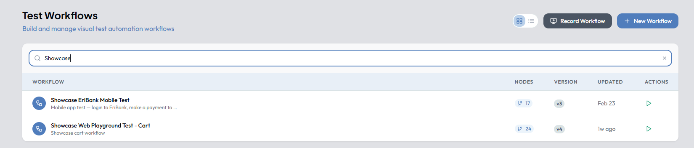
Was Sie mit Test Workflows tun können
- Aufgezeichnete Tests verfeinern und benutzerdefinierte Logik hinzufügen
- Validierungen und Assertions hinzufügen, um das Anwendungsverhalten zu überprüfen
- Testdaten für dynamische, wiederverwendbare Szenarien integrieren
- Ausführung Schritt für Schritt mit Breakpoints und Live-Ansicht debuggen
- Testbereitschaft vor der automatisierten Headless-Ausführung sicherstellen
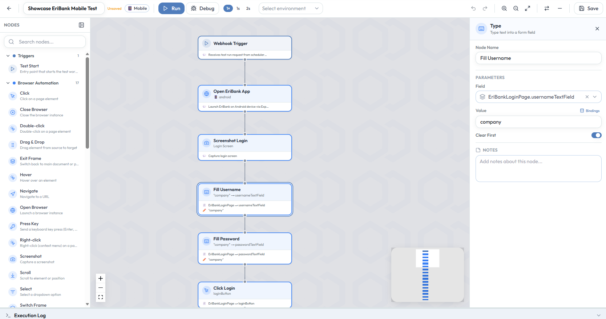
Erstellen und Bearbeiten
Die Test Workflows Übersicht listet alle vorhandenen Tests auf. Die Schaltfläche + New Workflow öffnet eine leere Canvas. Die Schaltfläche Record Workflow navigiert zum Aufzeichnungsmodul, in dem Tests mit einem Klick-Recorder oder einem KI-Chatbot erstellt werden können. Workflows können zwischen Listen- und Kachelansicht umgeschaltet, gesucht, sortiert und ausgewählt werden.
Jeder Schritt im Workflow wird durch einen Node dargestellt, der eine bestimmte Aktion ausführt, wie z. B. das Klicken auf ein Element, die Texteingabe oder die Validierung einer Bedingung.
Test Workflows und Sub-Workflows
Test Workflows bilden die primären ausführbaren Tests in Autemos. Sie verbinden Browser-, Mobile-, API-, Daten- und Validierungsschritte zu einem durchgängigen End-to-End-Testprozess.
Sub-Workflows sind wiederverwendbare Workflow-Bausteine, die aus einem oder mehreren Test Workflows aufgerufen werden können. Sie eignen sich für häufig wiederkehrende Abläufe wie Login, Kundenerstellung, Navigation, Testdatenvorbereitung oder Aufräumarbeiten.
Durch Sub-Workflows werden doppelte Testschritte vermieden, die Wartung vereinfacht und gemeinsam verwendete Prozesse über mehrere Tests hinweg konsistent umgesetzt.
| Typ | Zweck |
|---|---|
| Test Workflow | Repräsentiert ein vollständiges ausführbares Testszenario |
| Sub-Workflow | Repräsentiert eine wiederverwendbare Sequenz, die von übergeordneten Workflows aufgerufen werden kann |
Beide Typen erscheinen in derselben Übersicht und lassen sich über die Filter All, Test-Workflows und Sub-Workflows eingrenzen. Ein Badge an jeder Zeile zeigt den Typ an.
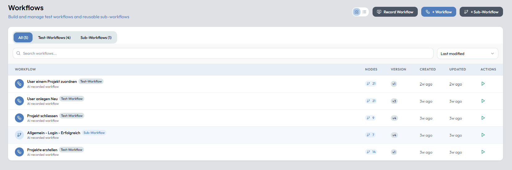
Kernkonzepte
Lineare Ausführung
Die meisten Workflows folgen einer von oben nach unten ausgeführten Abfolge von Schritten.
Bedingte Logik
Verwenden Sie If-Nodes, um die Ausführung basierend auf Laufzeitbedingungen zu verzweigen.
Schleifen
Iterieren Sie über Daten oder wiederholen Sie Aktionen mit Loop-Nodes für datengetriebenes Testen.
Drag & Drop Bearbeitung
Nodes können direkt auf der visuellen Canvas hinzugefügt, entfernt und umsortiert werden.
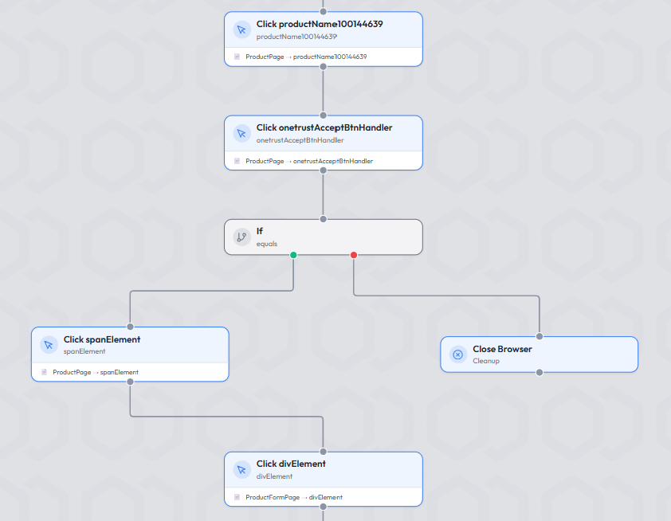
Nodes verstehen
Nodes sind die grundlegenden Einheiten eines Test Workflows. Jeder Node repräsentiert eine einzelne Aktion oder Operation:
- Interaktion mit UI-Elementen (Click, Type)
- Informationen erfassen (Extract Text, Screenshot)
- Verhalten validieren (Assert, Soft Verify)
- Daten verwalten (Test Data, Input-Variablen)
- Ablauf steuern (If, Loop, Wait)
Nodes können je nach Typ mit Variablen und gespeicherten Daten interagieren. Eine detaillierte Dokumentation für jeden Node ist in den Node-Referenzabschnitten weiter unten verfügbar.
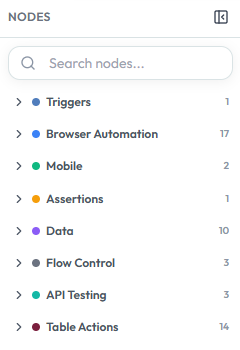
Mit Testdaten und Variablen arbeiten
Test Workflows unterstützen eine flexible Datenverwaltung für dynamische und wiederverwendbare Tests. Daten können in Variablen gespeichert, während der Ausführung zwischengespeichert und in späteren Schritten wiederverwendet werden.
- Werte in Workflow-Variablen speichern und schrittübergreifend wiederverwenden
- Den Test Data Easy-Node verwenden, um tabellarische Datensätze inline zu binden
- Auf Zeilendaten zugreifen über
{{easyData.field}}oder{{easyDataRecords.0.field}} - Extern verwaltete Datensätze für die workflow-übergreifende Wiederverwendung verknüpfen
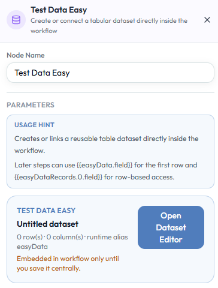
Unterstützte Testtypen
Test Workflows unterstützen mehrere Testtypen innerhalb eines einzelnen Ablaufs — unabhängig oder kombiniert:
- Web-Testing — browserbasierte UI-Automatisierung
- Mobile Testing — iOS- und Android-App-Tests
- API-Testing — direkte HTTP-Request-Validierung
Dies ermöglicht End-to-End-Szenarien wie: Mobile Aktion → API-Validierung → Web-Überprüfung.
Ihren ersten Test Workflow in 5 Minuten erstellen
Dieses Schnell-Tutorial führt Sie durch das Erstellen, Verfeinern und Debuggen eines einfachen Test Workflows in Autemos. Am Ende werden Sie einen funktionierenden, testbereiten Workflow haben.
Einen Test Workflow öffnen
Im Demo-Projekt finden Sie Beispieltests für Mobile, Web und einen kombinierten Ablauf. Nach der Auswahl eines Tests sehen Sie die Workflow-Canvas, auf der jeder Schritt als Node dargestellt ist. Aufgezeichnete Workflows umfassen typischerweise den App-Start, grundlegende Benutzerinteraktionen und Navigationsschritte.
Die Workflow-Struktur prüfen
Scannen Sie den Workflow von oben nach unten. Achten Sie auf eine klare Schrittabfolge (z. B. Login → Navigate → Aktion), fehlende Validierungen und fest codierte oder unklare Werte. In dieser Phase sind die meisten Workflows funktionsfähig, aber noch nicht robust oder wiederverwendbar.
Eine Validierung hinzufügen
Fügen Sie nach einer wichtigen Aktion einen Assert- oder Soft Verify-Node hinzu, um zu überprüfen, ob ein Bildschirm sichtbar ist, ein Wert korrekt ist oder ein Element vorhanden ist.
Testdaten einführen
Ersetzen Sie statische Werte durch dynamische Daten mithilfe des Test Data Easy-Nodes. Fügen Sie den Node direkt nach dem Startnode am Anfang des Workflows ein. Dadurch kann Ihr Workflow mit verschiedenen Datensätzen ausgeführt und szenarioübergreifend wiederverwendet werden.
Aufräumen und Strukturieren
Benennen Sie Nodes zur besseren Übersicht um (z. B. "Click Button" → "Click Login"), gruppieren Sie logische Schritte gedanklich (Login, Navigation, Aktion) und entfernen Sie unnötige Schritte. Ein übersichtlicher Workflow ist einfacher zu debuggen und zu pflegen.
Den Workflow debuggen
Wechseln Sie in den Debug-Modus. Setzen Sie einen Breakpoint bei einem kritischen Schritt, führen Sie den Workflow aus, arbeiten Sie Schritt für Schritt und beobachten Sie das Verhalten in der Live-Ansicht. Nutzen Sie das Execution Log, um Timing, Erfolg/Fehler und Fehler zu überprüfen. Beheben Sie Probleme sofort.
Testbereitschaft bestätigen
Ihr Workflow ist bereit, wenn: alle Schritte erfolgreich ausgeführt werden, Validierungen vorhanden sind, Testdaten korrekt konfiguriert sind und beim Debuggen keine blockierenden Fehler auftreten. Der Workflow kann nun zuverlässig in automatisierten Runs über den Scheduler ausgeführt werden.
Einen Workflow debuggen
Autemos bietet leistungsstarke Debugging-Funktionen, um sicherzustellen, dass Workflows wie erwartet funktionieren. Wechseln Sie direkt von der Workflow-Canvas zwischen Run- und Debug-Modus.
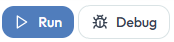
Debug-Modus
Beim Ausführen eines Workflows im Debug-Modus können Sie:
- Breakpoints bei kritischen Schritten setzen
- Schritte einzeln mit der Step-Schaltfläche ausführen
- Die Ausführung jederzeit fortsetzen oder anhalten
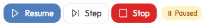
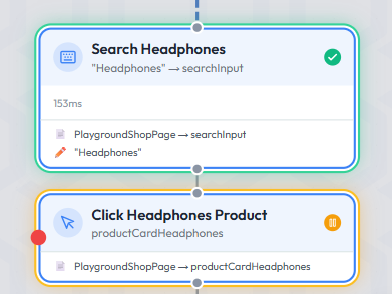
Execution Log
Das Execution Log liefert schrittweise Statusaktualisierungen, Ausführungszeiten und detaillierte Fehlerinformationen. Verwenden Sie es, um genau zu ermitteln, welcher Schritt fehlgeschlagen ist und warum.
Logs kopieren
Im Kopf des Panels Execution Log kopiert der Knopf Copy logs (vor Clear logs) mit einem Klick alle Einträge des aktuellen Laufs in die Zwischenablage, eine Zeile je Eintrag im Format [HH:MM:SS.mmm] +verstrichen STUFE [Node] Nachricht (STUFE ist INFO, WARN, ERROR oder OK). Das Panel bleibt dabei offen. Im Laufbericht gibt es denselben Knopf am aufgeklappten Log-Block eines Schritts (Copy logs of <Schritt>); er kopiert genau dessen Zeilen im Format [Zeit] STUFE Nachricht.
Secrets im Log
Secret-Werte erscheinen im Execution Log, in der Status-Antwort, im Laufbericht und im API-Request-Protokoll vollständig als ***, ohne ein Zeichen Klartext. Werte unter 4 Zeichen lassen sich in Texten nicht zuverlässig als Secret erkennen und werden dort nicht maskiert; der Server vermerkt das in seinem Log.
Live-Ausführungsansicht
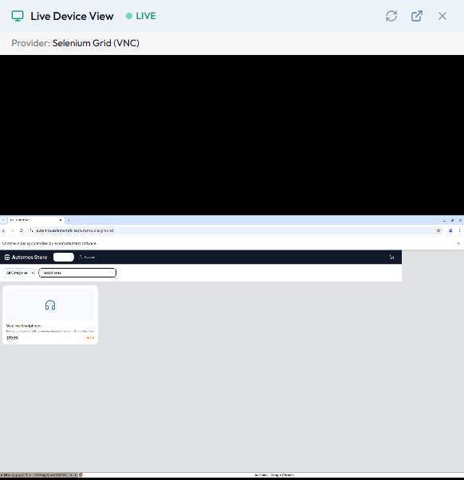
Für UI-basierte Tests (Web oder Mobile) zeigt eine Live-Ansicht die Echtzeit-Interaktion mit der Anwendung, eine visuelle Bestätigung jedes Schritts und die Möglichkeit, die Ansicht in einem separaten Tab zu öffnen. Dies erleichtert die schnelle Identifizierung und Behebung von Problemen.
Error Handling & Soft Verify
Workflows unterstützen flexible Fehlerbehandlungsstrategien.
Standardverhalten
Standardmässig stoppt ein Workflow die Ausführung, wenn ein Schritt fehlschlägt. Dies ist die sicherste Option und stellt sicher, dass Probleme sofort sichtbar werden.
Soft Verify
Bei Verwendung von Soft Verify werden Fehler protokolliert und die Ausführung fortgesetzt. Dies ist nützlich, wenn mehrere Validierungen ausgeführt werden sollen und Sie ein vollständiges Testergebnis anstelle eines vorzeitigen Abbruchs wünschen.
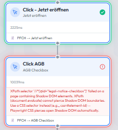
Wann welchen Ansatz verwenden
Standard (Bei Fehler stoppen)
Verwenden Sie dies, wenn ein Schrittfehler alle nachfolgenden Schritte sinnlos macht. Wenn z. B. der Login fehlschlägt, macht eine Fortsetzung keinen Sinn.
Soft Verify (Fortsetzen)
Verwenden Sie dies, wenn Sie alle Validierungsfehler in einem einzigen Run sammeln möchten, z. B. bei Formularfeldvalidierungen oder UI-Zustandsüberprüfungen.
Einen Workflow für die Ausführung vorbereiten
Bevor ein Workflow automatisch im Headless-Modus ausgeführt werden kann (z. B. in einem Scheduler), muss er testbereit sein. Ein Test gilt als bereit, wenn:
- Alle Schritte erfolgreich ausgeführt werden
- Datenabhängigkeiten aufgelöst sind
- Keine blockierenden Fehler mehr vorhanden sind
Self-Healing
Autemos bietet Self-Healing-Funktionen für die Element-Identifikation. Wenn sich ein UI-Element zwischen Testläufen ändert — z. B. wenn eine CSS-Klasse, ID oder ein Attribut geändert wird — kann das System versuchen, sich automatisch zu erholen.
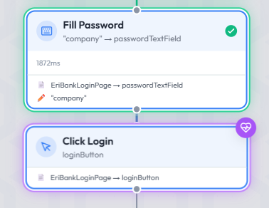
Geringere Instabilität
Tests funktionieren auch bei kleineren UI-Änderungen ohne manuellen Eingriff weiterhin.
Geringerer Wartungsaufwand
Self-Healing reduziert den Zeitaufwand für die Aktualisierung von Selectors nach Anwendungsupdates.
Collections (Test Sets)
Eine Collection ist eine geordnete Gruppe von Test Workflows, die Sie gemeinsam ausführen: per Fast Run oder als Ziel eines Zeitplans, nacheinander oder parallel und mit automatischer Wiederholung fehlgeschlagener Tests. Jede Ausführung ist eine eigene Collection Execution mit Bericht je Test und einem Gesamtstatus. Collections funktionieren ohne Jira/Xray-Konfiguration.
Collection anlegen
- In der Workflow-Übersicht gibt es neben All, Test-Workflows und Sub-Workflows den Reiter Collections (n).
- Die Kopfzeile ist in allen Reitern gleich: Ansichtsumschaltung, Record Workflow und das Menü + Create mit den Einträgen Workflow, Sub-Workflow und Collection.
- + Create → Collection öffnet den Dialog Create Collection mit den Feldern Name und Description, einer Suche (Search workflows) und der Liste aller Test Workflows des Projekts (Sub-Workflows erscheinen nicht). Pro Workflow werden Version, Jira-Schlüssel und Änderungsdatum angezeigt.
- Die Reihenfolge, in der Sie die Workflows anhaken, ist die Reihenfolge der Collection. Create legt die Collection an und öffnet ihre Detailseite.
Collections-Liste und Detailseite
Die Liste im Reiter Collections zeigt Name, Workflows, Last execution, Status und Updated. Jede Zeile hat einen Run-Knopf; ein Klick auf den Namen öffnet die Detailseite.
| Element | Funktion |
|---|---|
| Back | Zurück zur Collections-Liste |
| Run | Öffnet den Dialog Run collection |
| Schedule | Öffnet den Scheduler mit dem Anlegedialog und vorgewählter Collection |
| Edit | Name, Beschreibung und Mitglieder ändern (Dialog Edit Collection, Speichern mit Save) |
| Delete | Löscht die Collection nach Rückfrage. Workflows und bisherige Ausführungen bleiben erhalten. |
| Move … up / Move … down / Remove … | Reihenfolge ändern bzw. einen Workflow aus der Collection entfernen. Die Änderung wird sofort gespeichert. |
Die Tabelle der Detailseite zeigt #, Workflow, Version, Jira und Availability. Ist ein Mitglied nicht mehr verfügbar (z. B. gelöscht), erscheint der Hinweis „1 workflow unavailable".
Collection ausführen
Run öffnet den Dialog Run collection:
| Einstellung | Beschreibung | Standard |
|---|---|---|
| Execution mode | Sequential: ein Test nach dem anderen in der Reihenfolge der Collection. Parallel: mehrere Tests gleichzeitig, die übrigen warten. | Sequential |
| Retry count | Wie oft ein fehlgeschlagener Test erneut gestartet wird (0 bis 3) | 0 |
| Headless | Ausführung ohne sichtbaren Browser | an |
Start run erzeugt eine neue Collection Execution und öffnet deren Seite.
Regeln
- Es laufen alle Workflows, die beim Start in der Collection enthalten und verfügbar sind. Später hinzugefügte Workflows gehören nicht zu dieser Ausführung.
- Nicht verfügbare Mitglieder werden vor dem Start gemeldet und im Bericht als Not run (Grund „Workflow unavailable") ausgewiesen.
- Im Modus Parallel laufen standardmässig höchstens drei Tests gleichzeitig; weitere starten, sobald ein Platz frei wird.
- Nur fehlgeschlagene Tests werden wiederholt, höchstens Retry count-mal. Bei Sequential läuft die Wiederholung vor dem nächsten Test. Self-Healing arbeitet innerhalb jedes Laufs unverändert.
- Anlegen, Ändern und Ausführen ist Projektmitgliedern vorbehalten; Lesen genügt der Projektzugehörigkeit.
Ausführungsseite und Status
Die Seite „<Collection> – execution #<id>" zeigt den Gesamtstatus (Overall status), Modus, Retry, Auslöser, Start und Ende sowie eine Zusammenfassung wie „n passed · m failed · k not run". Während die Ausführung läuft, aktualisiert sie sich alle 5 Sekunden; Cancel bricht eine wartende oder laufende Ausführung ab. Die Tabelle Test results hat die Spalten Test, Status, Attempts, Duration (Summe aller Versuche) und Report mit einem Link „Attempt n" je Versuch auf den Laufbericht.
| Ebene | Statuswerte |
|---|---|
| Test | Queued, Running, Passed, Passed after Retry, Failed, Not run, Cancelled |
| Collection Execution | Queued, Running, Passed, Failed, Cancelled |
Der Gesamtstatus ergibt sich nur aus den gestarteten Tests: mindestens ein Failed ergibt Failed, sonst ergibt mindestens ein bestandener Test Passed. Wurde kein Test gestartet, ist die Ausführung Failed mit dem Grund „No runnable workflow." Eine erfolgreiche Wiederholung wird separat ausgewiesen („passed after retry"); es gibt keinen eigenen Gesamtstatus dafür.
Collection im Zeitplan
Im Scheduler wählen Sie im Anlegedialog unter Execution target die Option Collection (statt Workflow). Dann stehen Collection, Execution mode (Sequential/Parallel) und Retry count (0–3) zur Verfügung; die Felder für einzelne Workflows, Parallelism und Retry-Verzögerung entfallen. Zeit, Frequenz, Zeitzone, Trigger und Aktiv-Schalter bleiben.
- Die Zeitplan-Liste zeigt „Collection · <Name> · n Workflows · Parallel · Retry 1x" statt der Testanzahl.
- Die Detailseite des Zeitplans zeigt Collection: <Name> mit Modus und Retry, einen Link zur Collection und die letzten Ausführungen (Recent executions).
- Jeder Lauf (Auslöser oder Run Now) erzeugt eine Collection Execution mit Auslöser Schedule.
- Wurde die Collection inzwischen gelöscht, endet die Ausführung als Failed mit dem Grund „The collection of this schedule no longer exists."
- Bestehende Zeitpläne mit dem Ziel Workflow verhalten sich unverändert.
Werkzeugleiste des Workflow Editors
Die Werkzeugleiste (Workflow editor toolbar) bleibt einzeilig: Schalter wie Undo, Redo, Auto Connect, Schedule und Jira / Xray zeigen nur ein Icon, der Name erscheint als Tooltip. Hauptaktionen wie Save behalten ihren Text. Die KI-Seitenleiste öffnen Sie über Open AI chat am Rand der Leiste (zuklappen mit Collapse AI chat); einen zweiten Knopf „Edit with AI" in der Werkzeugleiste gibt es nicht mehr.
Undo und Redo
Ein Klick auf Undo nimmt genau eine Aktion zurück, und schon die erste Aktion nach dem Öffnen oder Speichern lässt sich rückgängig machen. Redo stellt den Zustand nach der Aktion wieder her.
Run und Data-driven execution
Im Run-Menü startet Run sofort genau einen Lauf mit den Standard-Testdaten des Workflows, ohne Auswahldialog: Ein Test Data Binding wird mit seinem ersten Datensatz aufgelöst, bei Easy Test Data gilt Zeile 1 (bei One-Time-Use die nächste freie Zeile). Das Execution Log nennt, welcher Datensatz verwendet wurde. Fehlt ein Datensatz, meldet der Test-Data-Check das vor dem Start.
Jede Auswahl von Zeilen oder Datensätzen liegt in Data-driven execution…. Der Eintrag öffnet direkt den Dialog Data-driven execution. Gibt es sowohl Datensätze eines datengetriebenen Bindings als auch Zeilen eines Test-Data-Sets, wählen Sie unter Run by zwischen Datasets of a data-driven binding und Rows of a test data set.
- Datasets: Test data source, Data variable und Dataset selection (Standard All datasets) sind sofort sichtbar, ohne dass vorher eine Checkbox angehakt werden muss.
- Rows: Test data set (bei mehreren Quellen) und Run mode mit Single Row, Selected Rows oder All Rows; die Tabelle Data rows zeigt die Zeilen, eine Statuszeile nennt die Zahl der Zeilen und der entstehenden Testläufe (je Zeile ein Lauf). Vorgewählt sind Single Row und Zeile 1.
Der Lauf startet mit Run im Dialog. Die Auswahl gilt nur für diesen Dialog; ein späteres Run ist davon unberührt. In den Dialogen des Schedulers steuert dagegen die Checkbox Data-driven execution, ob ein Zeitplan-Test je Datensatz ausgeführt wird.
Schedule: Workflow direkt einem Zeitplan zuweisen
Der Knopf Schedule (Kalender-Icon) erscheint bei gespeicherten Haupt-Workflows, nicht bei Sub-Workflows. Bei einem noch nie gespeicherten Workflow ist er gesperrt (Tooltip „Save the workflow first to assign it to a schedule").
- Beim Öffnen lädt die Liste die Zeitpläne des Projekts mit Ziel Workflows (Collection-Zeitpläne erscheinen nicht). Zeitpläne, die den Workflow bereits enthalten, tragen ein Häkchen; ein Zähler am Knopf nennt die Anzahl der Zuweisungen.
- Ein Klick auf einen Zeitplan weist den Workflow zu und zeigt die Meldung „Added to schedule „<Name>"". Ein Klick auf einen bereits zugewiesenen Zeitplan entfernt nichts, sondern weist darauf hin, dass die Entfernung im Zeitplan erfolgt.
- Für das Zuweisen ist die Projektrolle Editor nötig; sonst erscheint „You need the Editor role in this project to assign schedules".
- + New Schedule (letzter Eintrag) wechselt in den Scheduler und öffnet den Anlegedialog mit vorgewähltem Workflow. Bei ungespeicherten Änderungen fragt der Editor zuvor im Dialog Unsaved changes nach (u. a. Save & continue). Über Back to workflow kehren Sie in den Editor zurück; der neue Zeitplan erscheint dort als zugewiesen.
Statusanzeigen für Code Sync und Jira/Xray Sync
Bei gespeicherten Workflows zeigt die Leiste bis zu zwei kompakte Statusknöpfe: Code sync: <Status> (wenn das Projekt eine Git-Verbindung hat) und Jira sync: <Status> (wenn der Workflow mit Jira/Xray verknüpft und die Verbindung eingerichtet ist). Fehlt die jeweilige Anbindung, fehlt der Knopf; beide sind unabhängig voneinander.
- Jeder Status hat Farbe und Form: Haken = In sync, Dreieck = Out of sync, Lesezeichen-Haken = Baseline accepted (blau, nie „In sync"), Fragezeichen = Unknown, Not checked, Not synced oder PR open, Kreuz = Fehler, Drehzeichen = Checking.
- Der Tooltip nennt die Integration, den Status, „Last checked …" und, falls vorhanden, den Jira-Testschlüssel bzw. die Commit-Zusammenfassung.
- Die Anzeigen folgen jeder Sync-Entscheidung ohne Neuladen (Prüfen, Übernehmen, Verknüpfen, Entknüpfen).
- Ein Klick auf Code sync öffnet den Dialog „Code changes – <Name>" mit Ignore, Accept baseline only, Apply und Check now. Ein Klick auf Jira sync zeigt in der Seitenspalte die Gruppe „Jira sync status".
Auto Connect
Der Knopf Auto Connect in der Werkzeugleiste schlägt Verbindungen für unverbundene Nodes vor, wenn deren Anordnung eindeutig ist. Bestehende Kanten und Node-Daten bleiben unberührt.
- Die vorgeschlagenen Kanten erscheinen gestrichelt. Die Leiste Auto Connect proposal meldet z. B. „2 connections suggested".
- Erst Apply übernimmt den Vorschlag; Cancel verwirft ihn ohne Änderung.
- Nach Apply nimmt ein einziges Undo alle neuen Kanten zurück.
- Mehrdeutige Stellen werden nicht verbunden, sondern gemeldet: offene Ausgänge von If und Loop, gleichrangige Positionen und Bereiche mit mehreren Enden.
- Ist nichts eindeutig, erscheint „No unambiguous connections …" mit einem Close-Knopf.
- Der Knopf ist gesperrt, solange der Editor gesperrt ist, ein Lauf aktiv ist oder weniger als zwei Nodes vorhanden sind.
Rot markierte Nodes: Grund erkennen
Ein rot umrandeter Node ist unvollständig oder nicht erreichbar. Der Grund ist direkt im Editor sichtbar, für alle Node-Typen:
- Am Node: Beim Hover erscheint ein Tooltip mit der konkreten Meldung.
- In den Node-Details: Jedes fehlende Pflichtfeld ist an seinem eigenen Formularfeld rot markiert, und darunter steht die Meldung, die benennt, welcher Wert fehlt. Beim Node Extract Text ist das z. B. das Feld Save As, wenn es leer ist, und nicht nur das Quell-Element.
- Für Orphan-Nodes (nicht erreichbar) und Nodes unbekannten Typs gibt es nur den Tooltip, da kein einzelnes Feld betroffen ist.
Die Regeln, welche Felder Pflicht sind, ändern sich dadurch nicht; die Anzeige macht nur den bereits berechneten Grund sichtbar. Ein gültig konfigurierter Node bleibt unmarkiert.
Workflow-Version wiederherstellen
Im Panel Version history des Editors lässt sich eine ältere Version wiederherstellen.
- Zu jeder älteren Version gibt es den Knopf Restore version N; die neueste Version hat keinen.
- Eine Rückfrage Restore version N? (Restore / Abbrechen) schützt vor versehentlichem Überschreiben. Ohne Bestätigung passiert nichts.
- Bei ungespeicherten Änderungen oder noch nicht übernommenen KI-Vorschlägen ist der Knopf gesperrt (Tooltip „Save your changes before restoring a version").
- Nach dem Wiederherstellen entsteht eine neue Version mit dem Vermerk „Restored from version n". Das Panel schliesst sich, der Editor lädt den Stand neu, und die Meldung „Workflow restored to version N" erscheint.
- Schlägt das Wiederherstellen fehl, steht im Panel „Restore failed: …" mit der Ursache.
- Dafür ist die Projektrolle Editor nötig.
- Ist der Workflow mit Git verbunden, wechselt der Code-Sync-Status danach auf Out of sync.
Page-Object-Locator nach Self-Healing
Speichert Self-Healing für ein Page-Object-Feld einen neuen Locator (im Self-Healing-Report „saved to repository"), gilt dieser Wert überall, ohne dass Sie Nodes neu verknüpfen müssen.
- Die Pages-Verwaltung, die Feldauswahl im Workflow-Editor und die Node-Details zeigen denselben aktuellen Locator, auch nach dem Neuladen der Seite.
- Ein neu gewähltes Feld und aus Page Objects erzeugte Workflows übernehmen den aktuellen Wert, nicht den Stand vor der Heilung.
- In der Ausführung gewinnt der aktuelle Locator des Page Objects gegen einen abweichenden, älteren Selektor im Node, wenn das Page Object für genau eine Web-Adresse steht und das Feld zu der gerade geöffneten Seite passt. Auf einer fremden Seite bleibt der Selektor des Nodes massgebend.
Datums- und Rechenausdrücke in Platzhaltern
Neben Variablen und Testdaten kennen die {{…}}-Platzhalter eine Schreibweise für Datum und einfache Rechnungen. Ein Workflow, der an einem anderen Tag abgespielt wird, soll so das richtige Datum liefern und nicht ein eingefrorenes Literal.
{{today+3d}} unverändert als Text stehen und wird so in ein Feld eingegeben; Variablen und Testdaten werden dort normal aufgelöst.| Ausdruck | Bedeutung | Beispiel |
|---|---|---|
{{today}}, {{now}} | Heutiges Datum (dd.MM.yyyy) bzw. aktueller Zeitpunkt (dd.MM.yyyy HH:mm:ss) | {{today}} |
{{today+3d}} | Versatz ±N mit Einheit d (Tage), w (Wochen), m (Monate) oder y (Jahre) | {{today-1w}} |
{{today+3d|dd.MM.yyyy}} | Optionales Ausgabeformat hinter | (Datumsmuster) | Lieferdatum in 3 Tagen als dd.MM.yyyy |
{{a+b}}, {{price*2}} | Einfache Arithmetik mit Zahlen und numerischen Variablen, von links nach rechts gerechnet | {{2+3}} |
- Eine gewöhnliche Variable hat immer Vorrang: Heisst eine Variable
today, wird ihr Wert verwendet und nicht das Datum. - Es gibt keine vollständige Formelsprache: keine Klammern und keine Funktionen über die genannten Formen hinaus.
- Bereits aufgenommene Workflows mit eingefrorenen Datumswerten werden nicht umgeschrieben.
Sub-Workflows
Mit Sub-Workflows können wiederverwendbare Sequenzen von Automatisierungsschritten einmal erstellt und anschliessend in mehreren Test Workflows verwendet werden.
Anstatt dieselben Aktionen in jedem Test erneut zu erstellen, kann ein gemeinsamer Prozess als separater Sub-Workflow gepflegt und über einen Call-Sub-Workflow-Node eingebunden werden.
Typische Beispiele
- Anmeldung an einer Anwendung
- Erstellung oder Vorbereitung von Testdaten
- Navigation zu einem häufig verwendeten Anwendungsbereich
- Ausführung eines wiederverwendbaren Geschäftsprozesses
- Gemeinsame Validierungs- oder Aufräumschritte
Wenn ein Sub-Workflow aktualisiert und gespeichert wird, wird der von den übergeordneten Workflows verwendete eingebettete Snapshot automatisch aktualisiert.
Vorteile
- Weniger Duplikate innerhalb der Test Workflows
- Zentrale Wartung gemeinsam verwendeter Testsequenzen
- Konsistenteres Verhalten der Automatisierung
- Kleinere und verständlichere übergeordnete Workflows
- Wiederverwendbare Prozesse mit konfigurierbaren Eingabeparametern
- Kontrollierter Austausch von Werten zwischen Parent- und Child-Workflow
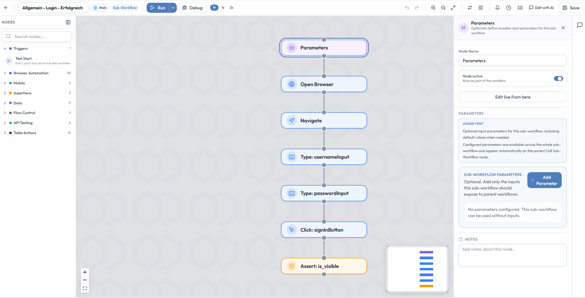
Weiterführend
Sub-Workflow erstellen und extrahieren
Autemos unterstützt mehrere Wege, einen Sub-Workflow anzulegen.
Leeren Sub-Workflow erstellen
In der Workflow-Übersicht wird ein neuer leerer Sub-Workflow über die Schaltfläche + Sub-Workflow erstellt. Sie steht neben + Workflow und Record Workflow zur Verfügung.
Autemos öffnet eine leere Sub-Workflow-Canvas. Anschliessend können Nodes hinzugefügt und optionale Parameter über den Parameters Node konfiguriert werden.
Aufzeichnung als Sub-Workflow speichern
Nach Abschluss einer Recording Session kann entschieden werden, ob die aufgezeichneten Schritte als Test Workflow oder als Sub-Workflow gespeichert werden. Details dazu finden sich unter Recorder Output.
Ein Sub-Workflow sollte gewählt werden, wenn der aufgezeichnete Prozess:
- in mehreren Tests verwendet werden soll,
- nur einen Teil eines vollständigen Tests darstellt,
- wiederverwendbare Eingabeparameter benötigt,
- oder zentral gepflegt werden soll.
Bestehenden Test Workflow konvertieren
Ein bestehender Test Workflow kann über das Aktionsmenü der Workflow-Übersicht umgewandelt werden: Actions → Convert to Sub-Workflow.
Die vorhandene Workflow-Struktur bleibt erhalten. Der Workflow wird anschliessend als Sub-Workflow gekennzeichnet und kann über Call-Sub-Workflow-Nodes wiederverwendet werden.
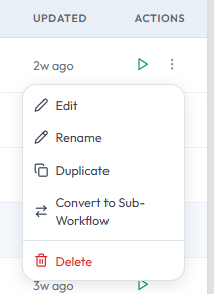
Schritte als Sub-Workflow extrahieren
Wiederverwendbare Schritte können direkt aus einem bestehenden Test Workflow extrahiert werden. Über das Kontextmenü eines Nodes auf der Canvas wird die Aktion Extract To Sub-Workflow aufgerufen.
Autemos erstellt daraus einen neuen Sub-Workflow und ersetzt die extrahierte Sequenz im Parent Workflow durch einen Call-Sub-Workflow-Node.
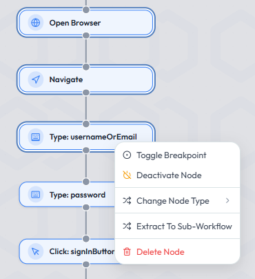
Parameter und Variablen-Scope
Sub-Workflows können über den Parameters Node optionale Eingabeparameter definieren. Konfigurierte Parameter sind im gesamten Sub-Workflow verfügbar und erscheinen automatisch auf dem übergeordneten Call-Sub-Workflow-Node.
Parameter legen fest, welche Werte ein Parent Workflow an den Sub-Workflow übergeben darf. Für jeden Parameter kann ein Standardwert definiert werden, der aktiv bleibt, wenn der Parent Workflow keinen abweichenden Wert übergibt.
Verhalten der Input-Parameter
- Nur explizit deklarierte Child-Parameter stehen für das Mapping zur Verfügung.
- Ein Parent-Wert kann als statischer Wert, Binding oder Secret übergeben werden.
- Ein vom Parent übergebener Wert überschreibt den Standardwert des Child Workflows.
- Wird kein Parent-Wert zugeordnet, bleibt der Standardwert des Child Workflows aktiv.
- Nicht gemappte Parent-Variablen gelangen nicht automatisch in den Child Scope.
Verhalten der Output-Parameter
- Child-Variablen bleiben standardmässig vom Parent Workflow isoliert.
- Nur explizit gemappte Outputs werden zurückgegeben.
- Jeder zurückgegebene Wert wird einer Cache-Variablen im Parent Workflow zugeordnet.
- Interne Child-Variablen werden ohne explizite Konfiguration nicht offengelegt.
Parametertypen: Text, Secret, Data Bundle
Im Parameters Node hat jede Zeile einen Typ (Parameter type): Text (Standard), Secret oder Data Bundle. Bei Secret und Data Bundle gibt es keinen Standardwert; das Feld zeigt „Assigned by the calling workflow". Bestehende Parameter bleiben Text.
- Im aufrufenden Call Sub-Workflow (Abschnitt Input Parameters) wählen Sie zu einem Secret-Parameter ein bestehendes Secret, zu einem Data-Bundle-Parameter ein Test Data Binding des Projekts (Data bundle for <Parameter>). Nicht mehr vorhandene Zuordnungen werden hervorgehoben („Secret „X" is not available in this project.").
- Im Sub-Workflow nutzen die Schritte
{{param}}(Secret-Wert),{{param.feld}}(Feld des ersten Datensatzes) bzw.{{paramRecords}}(Liste aller Datensätze). - Typ und Verfügbarkeit werden vor dem Start des Sub-Workflows geprüft; ein Fehler bricht den Call-Node mit einer klaren Meldung ab, z. B. „Sub-workflow parameter "zugang" expects a secret, but a binding was assigned.", „… (data bundle) is required, but nothing was assigned." oder „… secret "KK_PWD" does not exist or is not accessible for this run."
- Geheime Werte erscheinen im Log, im Report und in der Ausgabe des Call-Nodes nur maskiert.
Beispiel
| Child-Parameter | Parent-Mapping |
|---|---|
username | {{testData.username}} |
password | Secret LOGIN_PASSWORD |
Output customerId | Parent-Variable createdCustomerId |
Aktualisierung und Snapshots
Ein Call-Sub-Workflow-Node führt den Child Workflow nicht per Referenz aus, sondern über einen im Node gespeicherten eingebetteten Snapshot.
- Der Snapshot enthält die ausführbare Struktur des Child Workflows.
- Beim Speichern des Child Sub-Workflows wird der von Parent Workflows verwendete Snapshot automatisch aktualisiert.
- Parent Workflows verwenden den zuletzt gespeicherten Stand des Child Workflows.
- Nicht gespeicherte Änderungen stehen den Parent Workflows nicht zur Verfügung.
- Über Open Child kann der ursprüngliche Sub-Workflow direkt geöffnet werden.
Der Node zeigt zur Kontrolle den Zeitpunkt der Erfassung (Captured) sowie die Grösse des Snapshots in Nodes (Snapshot Size).
Open Browser
BrowserDer Open Browser-Node startet eine neue Browser-Instanz für die Ausführung webbasierter Testschritte. Er definiert den Ausführungskontext, einschliesslich der Zielplattform und ob der Browser im Headless-Modus läuft.
Wann verwenden
- Start eines Web-Test-Workflows
- Definition der Ausführungsumgebung für browserbasiertes Testen
- Ausführung von Tests auf einer bestimmten Plattform oder Konfiguration
- Vorbereitung von Workflows für lokales Debugging oder automatisierte Ausführung
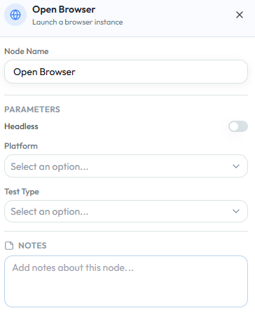
Konfiguration
| Parameter | Beschreibung | Erforderlich | Beispiel |
|---|---|---|---|
| Headless | Führt den Browser ohne sichtbare Benutzeroberfläche aus | No | true |
| Platform | Definiert die Ziel-Ausführungsplattform | Yes | Chrome |
| Test Type | Definiert die Art der Testausführung | Yes | Web |
| Ignore HTTPS errors | Akzeptiert selbstsignierte, abgelaufene oder nicht passende Zertifikate (nur bei Web, nicht bei Mobile; Standard aus) | No | true |
Verhalten
- Initialisiert eine neue Browser-Session
- Wendet die ausgewählte Plattform und Konfiguration an
- Startet den Browser im sichtbaren Modus (zum Debuggen) oder im Headless-Modus (für automatisierte Ausführung)
- Bereitet die Umgebung für alle nachfolgenden Browser-Interaktionen vor
Zertifikatsfehler ignorieren
Der Schalter Ignore HTTPS errors (Hinweis im Editor: „Accepts self-signed, expired or mismatched certificates. Test environments only — not applied to API nodes.") stellt die Browser-Sitzung so ein, dass HTTPS-Zertifikatsfehler ignoriert werden. Er ist standardmässig aus und nur für Web sichtbar.
- Im Testlauf gilt die Einstellung für die ganze Browser-Sitzung; das Execution Log vermerkt, dass Zertifikatsfehler ignoriert werden.
- Der Code-Export java/playwright erzeugt die Option im Browser-Kontext. Für andere Export-Ziele entsteht kein Code, sondern eine Warnung: Der exportierte Test würde nicht vertrauenswürdige Zertifikate ablehnen.
- Bei mehreren Open-Browser-Nodes zählt der erste Web-Node; weicht ein späterer ab, erscheint eine Warnung.
- Der Schalter gilt nicht für API-Nodes und wirkt nur bei Browser-Sitzungen auf dem Desktop, nicht bei Web-Sitzungen auf Mobilgeräten.
Ausgabe
Keine direkte Ausgabe. Der Node etabliert eine Browser-Session, die von allen nachfolgenden Schritten verwendet wird.
Fehlerbehandlung
- Stoppt die Ausführung, wenn der Browser nicht gestartet werden kann
- Stoppt die Ausführung, wenn die ausgewählte Plattform oder Konfiguration ungültig ist
Beispiel — Einen Chrome-Web-Test starten
| Parameter | Wert |
|---|---|
| Headless | false |
| Platform | Chrome |
| Test Type | Web |
Best Practices
- Verwenden Sie den nicht-Headless-Modus während der Entwicklung und des Debuggings
- Verwenden Sie den Headless-Modus für automatisierte und geplante Ausführungen
- Stellen Sie sicher, dass die richtige Plattform für Ihr Testszenario ausgewählt ist
- Behalten Sie diesen Node am Anfang Ihres Workflows
- Vermeiden Sie das Mischen mehrerer Browser-Sessions innerhalb eines einzelnen Workflows, sofern nicht ausdrücklich erforderlich
Reload
BrowserDer Reload Node lädt die aktuelle Seite der aktiven Browser-Sitzung neu. Er ist für Web-Tests gedacht, z. B. um nach einer Änderung den gespeicherten Zustand zu prüfen.
Konfiguration
Der Node hat keine Parameter.
Verhalten
- Lädt die aktuelle Seite neu (Playwright und Selenium)
- Die Browser-Sitzung bleibt bestehen
Go Forward
BrowserDer Go Forward Node geht im Verlauf der Browser-Sitzung einen Schritt vorwärts, das Gegenstück zu Go Back. Er ist für Web-Tests gedacht.
Konfiguration
Der Node hat keine Parameter.
Verhalten
- Navigiert im Verlauf der aktiven Sitzung vorwärts (Playwright und Selenium)
- Der Recorder kann „go forward" als eigenen Node aufnehmen
Close Browser
BrowserDer Close Browser-Node beendet die aktive Browser-Session. Er wird typischerweise am Ende eines Test Workflows verwendet, um Ressourcen freizugeben und die Ausführung abzuschliessen.
Wann verwenden
- Beenden eines Web-Test-Workflows
- Freigabe von Browser-Ressourcen nach der Ausführung
- Sicherstellen eines sauberen Test-Lebenszyklus für wiederholte oder geplante Ausführungen
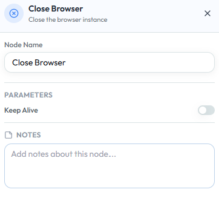
Configuration
| Parameter | Description | Required | Example |
|---|---|---|---|
| Keep Alive | Hält die Browser-Session nach der Ausführung offen (nützlich für das Debugging) | No | false |
Verhalten
- Schliesst die aktive Browser-Session und beendet alle Interaktionen
- Gibt zugehörige Ressourcen frei
- Wenn Keep Alive aktiviert ist: Die Browser-Session bleibt offen — nützlich für Debugging oder manuelle Inspektion
Ausgabe
Keine Ausgabe.
Beispiel — Browser am Ende des Workflows schliessen
| Parameter | Wert |
|---|---|
| Keep Alive | false |
Verwenden Sie Keep Alive = true nur beim Debugging, um den Endzustand zu überprüfen.
Best Practices
- Platzieren Sie diesen Node am Ende Ihres Workflows
- Verwenden Sie
Keep Alive = truenur beim Debugging - Schliessen Sie Sessions bei automatisierten Runs immer, um Ressourcenlecks zu vermeiden
Type
UI InteractionDer Type-Node gibt Text in ein bestimmtes Eingabefeld ein. Er wird verwendet, um Benutzereingaben in Formularen, Suchfeldern, Anmeldemasken oder beliebigen bearbeitbaren UI-Elementen zu simulieren.
Wann verwenden
- Text in Eingabefelder eingeben
- Formulare ausfüllen (z. B. Name, E-Mail, Passwort)
- Dynamische Werte aus Testdaten bereitstellen
- Realistisches Benutzer-Tippverhalten simulieren
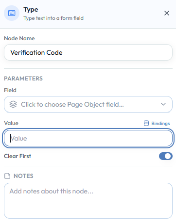
Konfiguration
| Parameter | Beschreibung | Erforderlich | Beispiel |
|---|---|---|---|
| Field | Ziel-Eingabefeld | Yes | LoginPage.passwordField |
| Value | Einzugebender Text | Yes | MySecret123 |
| Bindings | Erlaubt dynamische Werte aus Variablen oder Testdaten | No | ${password} |
| Clear First | Löscht vorhandenen Inhalt vor der Eingabe | No | true |
Verhalten
- Wartet, bis das Ziel-Eingabefeld verfügbar und interaktionsfähig ist
- Löscht optional vorhandenen Inhalt, wenn Clear First aktiviert ist
- Gibt den angegebenen Wert ein und löst eingabebezogene Ereignisse aus
- Schlägt fehl, wenn das Feld nicht gefunden oder nicht damit interagiert werden kann
Ausgabe
Keine Ausgabe.
Beispiel — Einen Verifizierungscode eingeben
| Parameter | Wert |
|---|---|
| Field | VerificationPage.codeField |
| Value | 123456 |
| Clear First | true |
Best Practices
- Aktivieren Sie Clear First, wenn Felder bereits Werte enthalten könnten
- Verwenden Sie Bindings für dynamische und wiederverwendbare Testeingaben
- Vermeiden Sie das Hardcodieren von sensiblen Daten (z. B. Passwörtern)
- Fügen Sie einen Assert- oder Soft Verify-Node hinzu, um zu validieren, dass der korrekte Wert angewendet wurde
- Verwenden Sie stabile Eingabefelder aus dem Page Object Repository
Click
UI InteractionDer Click-Node führt eine Klick- oder Tipp-Aktion auf einem bestimmten UI-Element aus. Er wird verwendet, um Schaltflächen auszulösen, zwischen Bildschirmen zu navigieren und Formulare abzusenden.
Wann verwenden
- Schaltflächen oder Links auslösen
- Zwischen Bildschirmen navigieren
- Formulare absenden
Konfiguration
| Parameter | Beschreibung | Erforderlich | Beispiel |
|---|---|---|---|
| Field | Ziel-UI-Element | Yes | LoginPage.loginButton |
| Timeout | Maximale Wartezeit in Millisekunden | No | 5000 |
Verhalten
- Wartet, bis das Element sichtbar ist
- Führt die Klick-Aktion aus
- Schlägt fehl, wenn das Element nicht innerhalb des Timeouts gefunden wird
Ausgabe
Keine Ausgabe.
Beispiel — Die Login-Schaltfläche klicken
| Parameter | Wert |
|---|---|
| Field | LoginPage.loginButton |
Best Practices
- Verwenden Sie Elemente aus dem Page Object Repository für Stabilität
- Stellen Sie sicher, dass das Element vor der Interaktion sichtbar ist
- Profitiert von Self-Healing, wenn sich die Element-Identifikation ändert
Double Click
UI InteractionDer Double Click-Node führt eine Doppelklick-Aktion auf einem bestimmten UI-Element aus. Er wird für Interaktionen verwendet, die eine schnelle Zweifach-Klick-Eingabe erfordern, wie das Öffnen von Elementen, das Aktivieren von Bearbeitungsmodi oder das Auslösen erweiterter UI-Verhaltensweisen.
Wann verwenden
- Ein einzelner Klick reicht nicht aus, um die gewünschte Aktion auszulösen
- Interaktion mit Elementen, die Doppelklick erfordern (z. B. Listen, Tabellen, Datei-Explorer)
- Aktivierung von Bearbeitungs- oder Detailansichten in Desktop-ähnlichen Webanwendungen
Konfiguration
| Parameter | Beschreibung | Erforderlich | Beispiel |
|---|---|---|---|
| Field | Ziel-UI-Element oder Selector | Yes | UserList.firstRow |
| Timeout | Maximale Wartezeit in Millisekunden | No | 5000 |
Verhalten
- Wartet, bis das Zielelement verfügbar und interaktionsfähig ist
- Führt zwei schnelle aufeinanderfolgende Klick-Aktionen auf dem Element aus
- Das Timing zwischen den Klicks wird automatisch gesteuert
- Schlägt fehl, wenn das Element nicht innerhalb des definierten Timeouts gefunden wird
Ausgabe
Keine Ausgabe.
Fehlerbehandlung
- Stoppt die Ausführung, wenn das Element nicht gefunden oder nicht damit interagiert werden kann
- Kann mit Soft Verify kombiniert werden, um die Ausführung bei einem Fehler fortzusetzen
- Profitiert von Self-Healing, wenn sich die Element-Identifikation ändert
Beispiel — Einen Datensatz per Doppelklick öffnen
| Parameter | Wert |
|---|---|
| Field | UserList.firstRow |
| Timeout | 5000 |
Diese Aktion öffnet die Detailansicht per Doppelklick.
Best Practices
- Verwenden Sie Double Click nur, wenn er von der Anwendung ausdrücklich benötigt wird
- Stellen Sie sicher, dass das Element sichtbar und nicht verdeckt ist, bevor es ausgeführt wird
- Vermeiden Sie Double Click als Workaround für Timing-Probleme
Right Click
UI InteractionDer Right Click-Node führt eine Rechtsklick-Aktion auf einem bestimmten UI-Element aus. Er wird typischerweise verwendet, um Kontextmenüs zu öffnen oder sekundäre Aktionen auszulösen, die über einen Standardklick nicht verfügbar sind.
Wann verwenden
- Ein Kontextmenü öffnen
- Auf sekundäre Aktionen eines Elements zugreifen
- Mit Tabellenzeilen, Karten, Dateien oder Listenelementen interagieren
- Desktop-ähnliches Verhalten in Webanwendungen testen
Konfiguration
| Parameter | Beschreibung | Erforderlich | Beispiel |
|---|---|---|---|
| Field | Ziel-UI-Element oder Selector | Yes | UserList.firstRow |
| Timeout | Maximale Wartezeit in Millisekunden | No | 5000 |
Verhalten
- Wartet, bis das Zielelement verfügbar und interaktionsfähig ist
- Führt eine Rechtsklick-Aktion auf dem Element aus
- Öffnet typischerweise das Kontextmenü des Elements
- Schlägt fehl, wenn das Element nicht gefunden oder nicht damit innerhalb des Timeouts interagiert werden kann
Ausgabe
Keine Ausgabe.
Fehlerbehandlung
- Stoppt die Ausführung, wenn das Zielelement nicht gefunden oder nicht damit interagiert werden kann
- Kann mit Soft Verify kombiniert werden, um die Ausführung bei einem Fehler fortzusetzen
- Profitiert von Self-Healing, wenn sich die Element-Identifikation ändert
Beispiel — Das Kontextmenü für einen Benutzerdatensatz öffnen
| Parameter | Wert |
|---|---|
| Field | UserList.firstRow |
| Timeout | 5000 |
Nachdem das Kontextmenü geöffnet ist, fahren Sie im Workflow mit einem Click-Node fort, um die gewünschte Menüoption auszuwählen.
Best Practices
- Folgen Sie mit einem Click-Node, um die gewünschte Menüoption auszuwählen
- Fügen Sie einen Validierungsschritt hinzu, um zu bestätigen, dass das erwartete Kontextmenü erscheint
- Verlassen Sie sich nicht auf browsernative Kontextmenüs — das Verhalten kann zwischen Browsern variieren
Hover
UI InteractionDer Hover-Node bewegt den Cursor über ein bestimmtes UI-Element, ohne einen Klick auszuführen. Er wird verwendet, um hover-basierte Verhaltensweisen wie Tooltips, Dropdown-Menüs oder versteckte UI-Elemente auszulösen.
Wann verwenden
- Ein Menü oder Element erscheint nur beim Hovern
- Tooltips oder Overlays auslösen
- Versteckte Schaltflächen oder Aktionen einblenden
- UI-Verhalten testen, das von Mausbewegungen abhängt
Konfiguration
| Parameter | Beschreibung | Erforderlich | Beispiel |
|---|---|---|---|
| Field | Ziel-UI-Element oder Selector | Yes | Navigation.menuItem |
| Timeout | Maximale Wartezeit in Millisekunden | No | 5000 |
Verhalten
- Wartet, bis das Zielelement verfügbar und sichtbar ist
- Bewegt den Cursor über das Element
- Löst jegliches hover-basiertes UI-Verhalten aus (z. B. Dropdowns, Tooltips)
- Führt keinen Klick oder weitere Interaktion aus
- Schlägt fehl, wenn das Element nicht innerhalb des Timeouts gefunden wird
Ausgabe
Keine Ausgabe.
Fehlerbehandlung
- Stoppt die Ausführung, wenn das Element nicht gefunden oder gehovt werden kann
- Kann mit Soft Verify kombiniert werden, um die Ausführung bei einem Fehler fortzusetzen
- Profitiert von Self-Healing, wenn sich die Element-Identifikation ändert
Beispiel — Ein Dropdown-Menü per Hover öffnen
| Parameter | Wert |
|---|---|
| Field | Navigation.productsMenu |
| Timeout | 5000 |
Folgen Sie diesem Schritt mit einem Click-Node, um eine Option aus dem Dropdown auszuwählen.
Best Practices
- Kombinieren Sie mit einem Folgeschritt (z. B. Click oder Assert), um das Ergebnis zu validieren
- Stellen Sie sicher, dass das Element vor dem Hovern sichtbar ist
- Vermeiden Sie es, sich auf reine Hover-Interaktionen zu verlassen, wenn Alternativen vorhanden sind
Drag & Drop
UI InteractionDer Drag & Drop-Node bewegt ein UI-Element von einem Ort zum anderen. Er wird verwendet, um Interaktionen wie das Verschieben von Elementen zwischen Listen, das Umsortieren von Elementen, das Hochladen per Drop-Zone oder die Arbeit mit visuellen Editoren zu testen.
Wann verwenden
- Ein Element von einem Quellelement zu einem Zielbereich verschieben
- Drag-and-Drop-Verhalten in Web- oder Mobile-Anwendungen testen
- Elemente in einer Liste neu anordnen oder Objekte in Container ablegen
Konfiguration
| Parameter | Beschreibung | Erforderlich | Beispiel |
|---|---|---|---|
| Source Field | Zu ziehendes UI-Element | Yes | KanbanCard.todoItem |
| Target Field | UI-Element oder Bereich, in den das Quellelement abgelegt werden soll | Yes | KanbanColumn.inProgress |
Verhalten
- Wartet, bis sowohl Quell- als auch Zielelemente verfügbar und interaktionsfähig sind
- Zieht das Quellelement zum Zielort und lässt es los
- Schlägt fehl, wenn eines der Elemente nicht innerhalb des Timeouts gefunden wird
Ausgabe
Keine Ausgabe.
Beispiel — Eine Aufgabenkarte von "To Do" nach "In Progress" verschieben
| Parameter | Wert |
|---|---|
| Source Field | TaskBoard.todoCard |
| Target Field | TaskBoard.inProgressColumn |
Best Practices
- Verwenden Sie stabile Page Object Repository-Elemente für Quelle und Ziel
- Fügen Sie nach der Aktion einen Assert- oder Soft Verify-Node hinzu, um zu bestätigen, dass das Element erfolgreich verschoben wurde
- Vermeiden Sie genaue Pixel-Positionen, wenn element-basiertes Ziehen verfügbar ist
- Bevorzugen Sie einfachere Interaktionen, wenn die Anwendung eine schaltflächenbasierte Alternative bietet
Press Key
UI InteractionDer Press Key-Node sendet einen Tastendruck an ein ausgewähltes UI-Element. Er wird für tastaturgesteuerte Interaktionen wie das Absenden von Formularen, das Wechseln zwischen Feldern, das Schliessen von Dialogen oder das Auslösen von Tastenkombinationen verwendet.
Wann verwenden
- Formular mit Enter absenden
- Mit Tab zum nächsten Feld wechseln
- Dialog mit Escape schliessen
- Barrierefreiheit oder Tastaturnavigation testen
Konfiguration
| Parameter | Beschreibung | Erforderlich | Beispiel |
|---|---|---|---|
| Field | Ziel-UI-Element, das den Tastendruck erhalten soll | Yes | LoginPage.passwordField |
| Key | Zu sendende Taste | Yes | Enter |
Verhalten
- Wartet, bis das ausgewählte Feld oder Element verfügbar ist
- Fokussiert das Zielelement wenn erforderlich
- Sendet den konfigurierten Tastendruck
- Löst das entsprechende Anwendungsverhalten aus
- Schlägt fehl, wenn das Zielelement nicht gefunden oder der Tastendruck nicht ausgeführt werden kann
Ausgabe
Keine Ausgabe.
Fehlerbehandlung
- Stoppt die Ausführung, wenn das Zielelement nicht gefunden oder nicht damit interagiert werden kann
- Kann mit Soft Verify kombiniert werden, um die Ausführung bei einem Fehler fortzusetzen
- Profitiert von Self-Healing, wenn sich die Element-Identifikation ändert
Beispiel — Ein Login-Formular mit Enter absenden
| Parameter | Wert |
|---|---|
| Field | LoginPage.passwordField |
| Key | Enter |
Der Tastendruck sendet das Formular ab und löst den nächsten Seitenladevorgang aus.
Best Practices
- Wählen Sie das Element aus, das den Tastendruck erhalten soll
- Verwenden Sie Tab und Escape sorgfältig — das Verhalten variiert je nach Fokuszustand
- Fügen Sie nach dem Tastendruck einen Assert- oder Soft Verify-Node hinzu, um das erwartete Ergebnis zu validieren
Scroll
UI InteractionDer Scroll-Node scrollt den Viewport entweder zu einem bestimmten UI-Element oder zu einer definierten Position anhand von Koordinaten. Er bringt Elemente in den sichtbaren Bereich oder steuert das Scroll-Verhalten explizit in komplexen Layouts.
Wann verwenden
- Ein Element ist im aktuellen Viewport nicht sichtbar
- Vorbereitung für Interaktionen wie Click oder Type
- Scroll-Verhalten testen (z. B. Lazy Loading, lange Seiten)
- Zu einer bestimmten Position innerhalb einer Seite oder eines Containers scrollen
Konfiguration
| Parameter | Beschreibung | Erforderlich | Beispiel |
|---|---|---|---|
| Field | Ziel-UI-Element (verwendet beim Scrollen zu einem Element) | No | CheckoutPage.submitButton |
| Scroll To | Definiert den Scroll-Modus (Element oder Position) | Yes | element |
| X | Horizontaler Scroll-Versatz in Pixeln (Positionsmodus) | No | 0 |
| Y | Vertikaler Scroll-Versatz in Pixeln (Positionsmodus) | No | 500 |
* Field ist nur erforderlich, wenn Scroll To = element.
Scroll-Modi
Scroll To Element
Scrollt, bis das Zielelement im Viewport sichtbar ist.
Scroll To Position
Scrollt zu den angegebenen X/Y-Koordinaten ohne ein UI-Element zu benötigen.
Ausgabe
Keine Ausgabe.
Beispiel — Zu einem Element scrollen
| Parameter | Wert |
|---|---|
| Field | CheckoutPage.submitButton |
| Scroll To | element |
Beispiel — Zu einer Position scrollen
| Parameter | Wert |
|---|---|
| Scroll To | position |
| X | 0 |
| Y | 800 |
Best Practices
- Bevorzugen Sie element-basiertes Scrollen für Stabilität
- Vermeiden Sie fest codierte Koordinaten, wenn ein Page Object-Element verfügbar ist
- Kombinieren Sie mit einer Folgeaktion (z. B. Click oder Assert)
- Stellen Sie sicher, dass der richtige Scroll-Container in komplexen Layouts angesprochen wird
Select
UI InteractionDer Select-Node wählt eine Option aus einem Dropdown-Feld aus. Er wird für Formulare, Filter, Konfigurationsfelder oder beliebige UI-Elemente verwendet, bei denen der Benutzer einen Wert aus einer Liste verfügbarer Optionen auswählen muss.
Wann verwenden
- Einen Wert aus einem Dropdown auswählen
- Formularfelder mit vordefinierten Optionen setzen
- Filter oder Kategorien anwenden
- Dynamische Werte über Bindings verwenden
Konfiguration
| Parameter | Beschreibung | Erforderlich | Beispiel |
|---|---|---|---|
| Field | Dropdown-Feld für die Interaktion | Yes | PaymentPage.countryDropdown |
| Value | Auszuwählender Optionswert | Yes | Switzerland |
| Bindings | Erlaubt die dynamische Bereitstellung des Werts | No | country |
| Select By | Definiert, wie die Option ausgewählt werden soll | Yes | value |
Select By Optionen
| Option | Beschreibung |
|---|---|
value | Wählt die Option anhand ihres zugrunde liegenden Werts aus (z. B. CH) |
text | Wählt die Option anhand ihres sichtbaren Labels aus (z. B. Switzerland) |
index | Wählt die Option anhand ihrer Position in der Liste aus (z. B. 2) |
Verhalten
- Wartet, bis das Dropdown-Feld verfügbar ist
- Sucht die passende Option basierend auf der ausgewählten Strategie (Text, Wert oder Index)
- Wählt die passende Option aus
- Schlägt fehl, wenn das Feld oder die Option nicht gefunden werden können
Ausgabe
Keine Ausgabe.
Beispiel — Ein Land aus einem Zahlungsformular auswählen
| Parameter | Wert |
|---|---|
| Field | PaymentPage.countryDropdown |
| Value | Switzerland |
| Select By | text |
Best Practices
- Bevorzugen Sie die Auswahl nach sichtbarem Text, wenn der Wert für Benutzer bedeutsam ist
- Verwenden Sie Bindings, wenn Dropdown-Werte aus Testdaten kommen sollen
- Vermeiden Sie index-basierte Auswahl, ausser wenn die Reihenfolge der Optionen stabil ist
- Fügen Sie nach der Auswahl einen Assert- oder Soft Verify-Node hinzu, um zu bestätigen, dass der Wert angewendet wurde
Screenshot
UI InteractionDer Screenshot-Node erstellt ein Bild des aktuellen Anwendungszustands während der Testausführung. Er kann entweder den sichtbaren Viewport oder die gesamte Seite erfassen, je nach Konfiguration.
Wann verwenden
- Testausführungsschritte dokumentieren
- Beweise für Testergebnisse erfassen
- Probleme während der Ausführung debuggen
- Wichtige Checkpoints in einem Workflow aufzeichnen
Verhalten
- Erfasst den aktuellen Zustand der Anwendung zur Laufzeit
- Wenn Full Page aktiviert ist: Scrollt und erfasst die gesamte Seite
- Andernfalls: Erfasst nur den sichtbaren Viewport
- Setzt die Ausführung unmittelbar nach der Aufnahme fort
Konfiguration
| Parameter | Beschreibung | Erforderlich | Beispiel |
|---|---|---|---|
| Name | Name der Screenshot-Datei | Yes | login_success |
| Bindings | Erlaubt dynamische Benennung über Variablen | No | ${testStep}_screenshot |
| Full Page | Erfasst die gesamte Seite anstatt nur des sichtbaren Viewports | No | true |
Verhalten
- Erfasst den aktuellen Zustand der Anwendung zur Laufzeit
- Speichert den Screenshot mit dem definierten Namen
- Wenn Full Page aktiviert ist: Scrollt und erfasst die gesamte Seite
- Andernfalls: Erfasst nur den sichtbaren Viewport
- Setzt die Ausführung unmittelbar nach der Aufnahme fort
Ausgabe
Screenshot-Datei, gespeichert als Teil der Testausführungsergebnisse.
Fehlerbehandlung
- Schlägt typischerweise nicht fehl, ausser wenn die Screenshot-Aufnahme nicht möglich ist
- Kann mit Soft Verify kombiniert werden, wenn in Validierungsabläufen verwendet
- Hat keinen Einfluss auf den Anwendungszustand
Beispiel — Einen Screenshot nach dem Login aufnehmen
| Parameter | Wert |
|---|---|
| Name | after_login |
| Full Page | false |
Best Practices
- Verwenden Sie aussagekräftige Namen zur einfachen Identifikation von Screenshots
- Erfassen Sie Screenshots an kritischen Punkten (vor/nach wichtigen Aktionen)
- Vermeiden Sie zu viele Screenshots, um die Ausführung schlank zu halten
- Verwenden Sie Full Page nur wenn nötig — kann die Performance beeinträchtigen
Upload File
UI InteractionDer Upload File-Node lädt eine Datei in eine Anwendung über ein Datei-Eingabeelement hoch. Er simuliert die Auswahl einer Datei zum Hochladen durch den Benutzer, ohne mit dem nativen Dateiauswahl-Dialog zu interagieren.
Wann verwenden
- Dokumente, Bilder oder Anhänge hochladen
- Datei-Upload-Funktionalität in Formularen testen
- Dateien für Importprozesse bereitstellen
- Szenarien automatisieren, die eine Dateiauswahl erfordern
Konfiguration
| Parameter | Beschreibung | Erforderlich | Beispiel |
|---|---|---|---|
| Field | Ziel-Datei-Eingabeelement | Yes | UploadPage.fileInput |
| File Path | Pfad zur hochzuladenden Datei | Yes | /files/test-document.pdf |
| Bindings | Erlaubt dynamische Dateipfade über Variablen | No | ${filePath} |
Verhalten
- Wartet, bis das Datei-Eingabeelement verfügbar ist
- Setzt den Dateipfad direkt auf dem Eingabeelement
- Löst den Upload-Prozess aus, wie von der Anwendung definiert
- Schlägt fehl, wenn das Element nicht gefunden oder der Dateipfad nicht zugänglich ist
Ausgabe
Keine Ausgabe.
Beispiel — Ein PDF-Dokument hochladen
| Parameter | Wert |
|---|---|
| Field | UploadPage.fileInput |
| File Path | /files/test-document.pdf |
Best Practices
- Verwenden Sie Dateipfade, die in der Ausführungsumgebung zugänglich sind
- Bevorzugen Sie relative oder umgebungsabhängige Pfade wenn möglich
- Verwenden Sie Bindings, um die Dateiauswahl dynamisch zu gestalten
- Stellen Sie sicher, dass das Datei-Eingabeelement im Page Object Repository korrekt definiert ist
Switch Session
Session ControlDer Switch Session-Node wechselt die Ausführung zu einer anderen aktiven Session innerhalb desselben Workflows. Er ermöglicht die Interaktion mit mehreren Sessions, wie z. B. verschiedenen Browser-Instanzen oder mobilen Geräten, innerhalb eines einzelnen Test Workflows.
Wann verwenden
- Arbeit mit mehreren Browser-Sessions
- Testen von Interaktionen zwischen verschiedenen Benutzern (z. B. Sender/Empfänger-Szenarien)
- Wechsel zwischen Web- und Mobile-Sessions in einem kombinierten Workflow
- Umgang mit Multi-Session- oder Multi-Geräte-Testszenarien
Konfiguration
| Parameter | Beschreibung | Erforderlich | Beispiel |
|---|---|---|---|
| Target Session | Name oder Bezeichner der Session, zu der gewechselt werden soll | Yes | Session_2 |
| Bindings | Erlaubt dynamische Session-Auswahl über Variablen | No | ${targetSession} |
Verhalten
- Wechselt den Ausführungskontext zur angegebenen aktiven Session
- Alle nachfolgenden Nodes werden innerhalb der ausgewählten Session ausgeführt
- Erstellt oder schliesst keine Sessions — wechselt nur zwischen bestehenden
- Schlägt fehl, wenn die Ziel-Session nicht existiert oder nicht aktiv ist
Ausgabe
Keine Ausgabe.
Beispiel — Zu einer sekundären Browser-Session wechseln
| Parameter | Wert |
|---|---|
| Target Session | Session_2 |
Best Practices
- Verwenden Sie klare und konsistente Benennung für Sessions
- Stellen Sie sicher, dass Sessions erstellt und aktiv sind, bevor Sie wechseln
- Fügen Sie nach dem Wechsel Validierungsschritte hinzu, um den korrekten Kontext zu bestätigen
- Verwenden Sie diesen Node hauptsächlich für Multi-Benutzer- oder Multi-Kontext-Szenarien
Switch Frame
Session ControlDer Switch Frame-Node ändert den Ausführungskontext zu einem bestimmten iframe oder zurück zum übergeordneten Frame. Er ist erforderlich, wenn mit Elementen interagiert wird, die in iframes eingebettet sind.
Wann verwenden
- Interaktion mit Elementen innerhalb eines iframes
- Zurückwechseln von einem iframe zur Hauptseite
- Arbeit mit eingebetteten Inhalten wie Zahlungsdienstleistern, externen Widgets oder eingebetteten Anwendungen
Konfiguration
| Parameter | Beschreibung | Erforderlich | Beispiel |
|---|---|---|---|
| Frame Selector | Selector oder Referenz auf den Ziel-iframe | Yes | PaymentPage.paymentIframe |
| Switch To | Definiert den Zielkontext (Frame oder übergeordneter Frame) | Yes | frame |
* Frame Selector ist erforderlich, wenn Switch To = frame.
Switch To Optionen
| Option | Beschreibung |
|---|---|
frame | Wechselt den Ausführungskontext in den angegebenen iframe |
parent | Wechselt den Ausführungskontext zurück zum übergeordneten (äusseren) Frame |
Verhalten
Switch To Frame
Wartet, bis der iframe verfügbar ist, und wechselt den Ausführungskontext hinein. Alle nachfolgenden Aktionen werden innerhalb des iframes ausgeführt.
Switch To Parent
Wechselt den Ausführungskontext zurück zum übergeordneten (äusseren) Frame. Erforderlich, um weiterhin mit Elementen ausserhalb des iframes zu interagieren.
Ausgabe
Keine Ausgabe.
Beispiel — In einen iframe wechseln
| Parameter | Wert |
|---|---|
| Frame Selector | PaymentPage.paymentIframe |
| Switch To | frame |
Beispiel — Zurück zum übergeordneten Frame wechseln
| Parameter | Wert |
|---|---|
| Switch To | parent |
Best Practices
- Wechseln Sie nach Abschluss der iframe-Interaktionen immer zurück zum übergeordneten Frame
- Verwenden Sie stabile iframe-Selectors aus dem Page Object Repository
- Halten Sie iframe-Interaktionen im Workflow zusammengroupiert
- Fügen Sie Validierungsschritte hinzu, um den korrekten Kontext zu bestätigen (z. B. Element-Vorhandensein)
Exit Frame
Session ControlDer Exit Frame-Node wechselt den Ausführungskontext vom aktuellen iframe zurück zu einem übergeordneten Dokument. Er wird verwendet, um einen iframe zu verlassen und weiterhin mit Elementen ausserhalb davon zu interagieren.
Wann verwenden
- Interaktionen innerhalb eines iframes wurden abgeschlossen
- Sie müssen zur Hauptseite oder einem übergeordneten Frame zurückkehren
- Elemente ausserhalb des iframes sind nach dem Wechsel in einen Frame nicht zugänglich
Konfiguration
| Parameter | Beschreibung | Erforderlich | Beispiel |
|---|---|---|---|
| Exit To | Definiert den Zielkontext, zu dem zurückgewechselt werden soll | Yes | top |
Exit To Optionen
| Option | Beschreibung |
|---|---|
parent | Wechselt eine Ebene nach oben vom aktuellen iframe |
top | Wechselt zurück zum Hauptdokument (Root-Ebene) |
Exit To Optionen
Top
Wechselt direkt zum Top-Level-Dokument unter Umgehung von verschachtelten iframes. Für die meisten Anwendungsfälle empfohlen.
Parent
Wechselt eine Ebene nach oben zum unmittelbaren übergeordneten Frame. Nützlich bei der Arbeit mit verschachtelten iframes.
Ausgabe
Keine Ausgabe.
Beispiel — Zum Hauptdokument verlassen
| Parameter | Wert |
|---|---|
| Exit To | top |
Best Practices
- Verlassen Sie den Frame nach Abschluss der iframe-Interaktionen immer
- Bevorzugen Sie
topbei der Arbeit mit verschachtelten iframes, um Verwirrung zu vermeiden - Fügen Sie nach dem Verlassen eine Validierung hinzu, um den korrekten Kontext zu bestätigen
- Vermeiden Sie unnötige Kontextwechsel
Closed Shadow DOM
Session ControlElemente in geschlossenen Shadow-Roots (attachShadow({ mode: 'closed' })) werden mit denselben Selektoren gefunden und bedient wie Elemente in offenen: CSS (#ziel-4), Text (text=Ziel 4 anklicken) und Rolle (role=button[...]). Es gibt keine eigene Selektorsyntax und keinen Workaround in Page Objects; Recorder, Self-Healing und Code-Export arbeiten unverändert.
So funktioniert es
- Der Node Open Browser installiert in Web-Sitzungen einen kleinen Hook, der geschlossene Shadow-Roots intern offen anlegt. In Playwright-Sitzungen wirkt er für alle Seiten und Frames, die danach geladen werden; in Selenium-Sitzungen (auch mobiles Web) setzt der Node ihn per Browser-Befehl.
- Das Host-Element trägt anschliessend das Attribut
data-stk-shadow-was-closed, damit die ursprüngliche Kapselung erkennbar bleibt. - Im Lauf-Log vermerkt der Worker, dass die Funktion aktiv ist.
Grenzen
- Der Selenium-Weg gilt nur für Chrome und Edge; Firefox und Safari auf iOS sind ausgenommen, ebenso native Mobile-App-Sitzungen. Dort wirkt der Hook nur auf der Registerkarte der Sitzung, neue Tabs und Fenster bekommen ihn nicht.
- Die Zielseite sieht den Root als offen. Seiten, die prüfen, ob
shadowRootnullist, verhalten sich möglicherweise anders. - Ein bereits geladenes Dokument wird erst bei der nächsten Navigation erfasst.
- Ein Playwright-Test ausserhalb von Autemos, der diesen Hook nicht installiert, findet diese Elemente nicht.
Abschalten
Die Funktion ist standardmässig an. Die Worker-Einstellung WORKER_CLOSED_SHADOW_FORCE_OPEN=false schaltet sie ab; dann gilt das frühere Verhalten (Elemente in geschlossenen Roots werden nicht gefunden); das Log vermerkt, dass die Funktion aus ist.
Mobile Press Key
MobileDer Mobile Press Key-Node simuliert das Drücken einer Hardware-Taste auf einem mobilen Gerät. Er wird verwendet, um systemseitige Aktionen wie das Zurücknavigieren, die Rückkehr zum Startbildschirm oder das Öffnen von Gerätemenüs auszulösen.
Wann verwenden
- In der App mit der Gerät-Zurück-Taste zurücknavigieren
- Zum Gerät-Startbildschirm zurückkehren
- Systemmenüs oder geräteseitige Steuerungen öffnen
- Mobilspezifisches Navigationsverhalten testen
Konfiguration
| Parameter | Beschreibung | Erforderlich | Beispiel |
|---|---|---|---|
| Key | Auf dem Gerät zu simulierende Hardware-Taste | Yes | BACK |
Verfügbare Tasten
| Option | Beschreibung |
|---|---|
BACK | Navigiert einen Schritt in der App zurück |
HOME | Kehrt zum Gerät-Startbildschirm zurück |
MENU | Öffnet das Geräte- oder App-Menü (sofern unterstützt) |
APP_SWITCH | Öffnet den App-Wechsler (Ansicht der zuletzt verwendeten Apps) |
ENTER | Bestätigt Eingaben oder löst Standardaktionen aus |
DELETE | Löscht Zeichen oder Inhalte |
VOLUME_UP | Erhöht die Gerätelautstärke |
VOLUME_DOWN | Verringert die Gerätelautstärke |
POWER | Simuliert das Drücken der Ein-/Aus-Taste |
Verhalten
- Sendet den ausgewählten Hardware-Tastenbefehl an das mobile Gerät
- Löst systemseitige Navigation oder Aktionen aus
- Erfordert kein UI-Element
- Das Verhalten kann je nach Gerät und Plattform (Android vs iOS) variieren
Ausgabe
Keine Ausgabe.
Beispiel — Zum vorherigen Bildschirm zurücknavigieren
| Parameter | Wert |
|---|---|
| Key | BACK |
Die BACK-Taste löst das native Navigationsverhalten des Geräts aus.
Best Practices
- Verwenden Sie BACK für realistische Navigation anstelle von UI-Schaltflächen, wenn angemessen
- Beachten Sie Unterschiede zwischen Android- und iOS-Verhalten
- Vermeiden Sie HOME, es sei denn, es ist ausdrücklich erforderlich (verlässt den App-Kontext)
- Kombinieren Sie mit Validierungsschritten, um das erwartete Navigationsergebnis zu bestätigen
Swipe
MobileDer Swipe-Node führt eine Wischgeste auf einem mobilen Gerät aus. Er wird verwendet, um Benutzerinteraktionen wie das Scrollen, das Navigieren zwischen Bildschirmen oder das Auslösen gestenbasierter Aktionen zu simulieren.
Wann verwenden
- Durch Inhalte auf mobilen Bildschirmen scrollen
- Zwischen Ansichten navigieren (z. B. Karussells, Tabs)
- Gestenbasiertes UI-Verhalten auslösen
- Mit Elementen interagieren, die Wischaktionen erfordern
Konfiguration
| Parameter | Beschreibung | Erforderlich | Beispiel |
|---|---|---|---|
| Direction | Vordefinierte Wischrichtung (up, down, left, right) | No | up |
| Start X | Start-X-Koordinate der Wischbewegung (Koordinatenmodus) | No | 100 |
| Start Y | Start-Y-Koordinate der Wischbewegung (Koordinatenmodus) | No | 600 |
| End X | End-X-Koordinate der Wischbewegung (Koordinatenmodus) | No | 100 |
| End Y | End-Y-Koordinate der Wischbewegung (Koordinatenmodus) | No | 100 |
| Duration | Dauer der Wischgeste in Millisekunden | No | 300 |
Swipe-Modi
Richtungsbasiert
Verwendet vordefinierte Richtungen (up, down, left, right). Berechnet die Swipe-Koordinaten automatisch. Für die meisten Anwendungsfälle empfohlen.
Koordinatenbasiert
Verwendet explizite Start- und Endkoordinaten. Ermöglicht präzise Steuerung für benutzerdefinierte Layouts, komplexe Gesten oder fein abgestimmte Interaktionen.
Ausgabe
Keine Ausgabe.
Beispiel — Richtungsbasierter Swipe
| Parameter | Wert |
|---|---|
| Direction | up |
| Duration | 300 |
Beispiel — Koordinatenbasierter Swipe
| Parameter | Wert |
|---|---|
| Start X | 100 |
| Start Y | 600 |
| End X | 100 |
| End Y | 100 |
| Duration | 300 |
Best Practices
- Bevorzugen Sie richtungsbasierte Swipes für Stabilität und Lesbarkeit
- Verwenden Sie Koordinaten nur wenn nötig
- Vermeiden Sie fest codierte Koordinaten über verschiedene Geräte hinweg — Bildschirmgrössen variieren
- Halten Sie die Swipe-Dauer realistisch (zu schnell oder langsam kann das Verhalten beeinflussen)
- Kombinieren Sie mit Assertions, um das erwartete Ergebnis zu überprüfen (z. B. Inhalt sichtbar)
Assert
AssertionsDer Assert-Node überprüft, ob ein UI-Element einer erwarteten Bedingung entspricht. Er wird verwendet, um das Anwendungsverhalten zu validieren und zu bestimmen, ob ein Test bestanden oder fehlgeschlagen ist.
Wann verwenden
- Überprüfen, ob ein Element sichtbar ist
- Prüfen, ob erwarteter Text oder Werte angezeigt werden
- Bestätigen, dass ein Bildschirm, Dialog oder Ergebnis erscheint
- Das Ergebnis einer vorherigen Aktion validieren
Konfiguration
| Parameter | Beschreibung | Erforderlich | Beispiel |
|---|---|---|---|
| Field | Zu prüfendes Ziel-UI-Element | Yes | LoginPage.errorMessage |
| Condition | Bedingung, die geprüft werden soll | Yes | visible |
| Expected Value | Wert für den Vergleich (bedingungsabhängig) | No | Invalid password |
| Bindings | Erlaubt dynamische Erwartungswerte aus Variablen oder Testdaten | No | ${expectedMessage} |
* Expected Value ist nur für Bedingungen erforderlich, die gegen einen Wert vergleichen.
Verhalten
- Wartet, bis das Zielelement oder die Bedingung ausgewertet werden kann
- Prüft die ausgewählte Bedingung gegen das Element
- Verwendet den erwarteten Wert, wenn die Bedingung einen Vergleich erfordert
- Lässt den Workflow fehlschlagen, wenn die Assertion nicht erfüllt wird
Weitere Bedingungen
Neben sichtbar/nicht sichtbar und den Textvergleichen gibt es diese Bedingungen. Der Recorder nimmt sie als Assert-Node auf und die Wiedergabe wertet sie identisch aus.
| Condition | Prüfung | Expected Value |
|---|---|---|
enabled / disabled | Das Element ist aktiviert bzw. deaktiviert (z. B. „Save is disabled") | nicht nötig |
matches | Der Text des Elements passt auf einen regulären Ausdruck (Teiltreffer genügt) | das Regex-Muster |
sorted | Alle Treffer des Selektors sind sortiert (z. B. eine Preisliste) | asc (Standard) oder desc |
pageLoaded | Der Seitentitel enthält den Wert | Titeltext, im Editor sichtbar und editierbar |
- Bei
sortedwerden Zahlen numerisch verglichen, alles andere alphabetisch. - Das Feld Expected Value erscheint bei allen Bedingungen, die einen Wert brauchen (
pageLoaded,urlContains,urlEquals,textNotOnPage,matches,sorted). - Im generierten Playwright-Test (Java) prüft
pageLoadedden Titel mithasTitle. Ohne Wert wird die Zusicherung nicht generiert und im Code als „NICHT GENERIERT" kommentiert. Ändern Sie den Titel im Code, übernimmt Code Sync den neuen Wert im Node zurück; reguläre Ausdrücke im Titelmuster übernimmt Code Sync nicht.
Ausgabe
Keine Ausgabe. Der Node trägt zum Testergebnis bei, indem er die Validierung als bestanden oder fehlgeschlagen markiert.
Beispiel — Überprüfen, ob Erfolgsmeldung nach Formularabsenden sichtbar ist
| Parameter | Wert |
|---|---|
| Field | PaymentPage.successMessage |
| Condition | visible |
| Expected Value | (leer) |
Best Practices
- Fügen Sie Assertions nach wichtigen Benutzeraktionen hinzu
- Bevorzugen Sie aussagekräftige geschäftliche Validierungen gegenüber rein technischen Prüfungen
- Verwenden Sie dynamische Erwartungswerte bei der Arbeit mit Testdaten
- Halten Sie Assertions fokussiert: eine Validierung pro Assert-Node
- Verwenden Sie Soft Verify, wenn Sie mehrere Validierungsfehler in einem Run sammeln möchten
Extract JSON Value
API TestingDer Extract JSON Value Node extrahiert einen Wert aus der letzten API-Antwort mittels Response Path oder JSONPath. Der extrahierte Wert wird als Workflow-Variable gespeichert und kann in späteren Workflow-Schritten wiederverwendet werden.
Wann verwenden
- Werte aus API-Responses extrahieren
- IDs für spätere Requests speichern
- Tokens oder Referenzen sichern
- Verschachtelte JSON-Strukturen lesen
Configuration
| Parameter | Description | Required | Example |
|---|---|---|---|
| Store As | Variablen-Name für den extrahierten Wert | Yes | userId |
| Response Path / JSONPath | Pfad zum gewünschten Wert in der Response | Yes | $.data.id |
Verhalten
- Liest die letzte API-Response
- Führt den JSONPath aus
- Extrahiert den Wert
- Speichert den Wert als Variable
Ausgabe
Der extrahierte Wert wird über die durch Store As definierte Variable bereitgestellt. Beispiel: ${userId}
Fehlerbehandlung
- Fehler bei ungültigem JSONPath
- Fehler wenn kein Wert gefunden wird
Best Practices
- Sinnvolle Variablennamen verwenden
- Stabile JSONPaths bevorzugen
API Request
API TestingDer API Request Node sendet HTTP-Requests direkt innerhalb eines Test Workflows. Damit lassen sich Backend-APIs aufrufen, Testdaten vorbereiten und UI- mit API-Tests kombinieren.
Wann verwenden
- Backend APIs aufrufen
- Testdaten vorbereiten
- UI- und API-Tests kombinieren
- Dynamische Daten laden
Unterstützte Methoden
- GET
- POST
- PUT
- DELETE
- PATCH
Configuration
| Parameter | Description | Required | Example |
|---|---|---|---|
| Method | HTTP-Methode | Yes | POST |
| URL | Ziel-Endpoint | Yes | https://api.example.com/users |
| Auth Type | Authentifizierungs-Modus | No | Bearer Token |
| Headers | HTTP-Header | No | Content-Type: application/json |
| Body | Request-Body (JSON) | No | {"name":"test"} |
| Response Alias | Name unter dem die Response gespeichert wird | No | createUserResponse |
Authentifizierung
Bearer Token
Token-basierte Authentifizierung.
Basic Auth
Benutzername / Passwort.
API Key
API-Key im Header oder Query.
OAuth2
OAuth2-Flow für sichere APIs.
Shared Config
Globale Auth-Konfiguration wiederverwenden.
Headers & Body
Verhalten
- Sendet den HTTP Request
- Löst Workflow-Variablen auf
- Speichert die Response
Ausgabe
Die Response wird unter dem konfigurierten Response Alias gespeichert und kann mit Extract JSON Value oder Verify Response weiterverarbeitet werden.
Fehlerbehandlung
- Fehler bei ungültiger URL
- Fehler bei ungültiger Authentifizierung
- Fehler bei fehlgeschlagenem Request
Best Practices
- Shared Config verwenden
- Responses validieren
- Keine Secrets hardcoden
Verify Response
API TestingDer Verify Response Node validiert die Response des vorherigen API Requests. Drei Match-Modi stehen zur Verfügung: partial, exact oder jsonPath.
Wann verwenden
- API Responses validieren
- Statuswerte prüfen
- JSON-Strukturen kontrollieren
- Backend-Prozesse absichern
Configuration
| Parameter | Description | Required | Example |
|---|---|---|---|
| Match Mode | Validierungsmodus (partial / exact / jsonPath) | Yes | partial |
| Expected Body | Erwarteter Wert oder erwartete Struktur | Yes | {"status":"ok"} |
Match-Modi
partial
Prüft, ob die erwarteten Felder enthalten sind. Ideal für dynamische Responses.
exact
Strikte Übereinstimmung — die Response muss exakt dem Expected Body entsprechen.
jsonPath
Validierung über JSONPath-Ausdrücke. Ideal für grosse Responses.
Verhalten
- Liest die letzte API-Response
- Führt die Validierung aus
- Stoppt den Workflow bei Fehlern
Ausgabe
Kein direkter Output. Der Node validiert die Response und stoppt den Workflow bei Fehlschlag.
Fehlerbehandlung
- Fehler wenn keine Response existiert
- Fehler wenn die Validierung fehlschlägt
Best Practices
- partial für dynamische Responses verwenden
- exact nur für stabile Responses verwenden
- jsonPath für grosse Responses bevorzugen
If
Control FlowDer If-Node führt bedingte Logik in einen Test Workflow ein. Er wertet eine Bedingung aus und leitet den Workflow in verschiedene Zweige, je nachdem, ob die Bedingung erfüllt ist oder nicht.
Wann verwenden
- Schritte nur unter bestimmten Bedingungen ausführen
- Optionale UI-Elemente behandeln (z. B. Popups, Dialoge)
- Flexible und dynamische Workflows erstellen
- Fallback- oder alternative Abläufe implementieren
Configuration
| Parameter | Description | Required | Example |
|---|---|---|---|
| Condition | Linke Seite des Vergleichs: meist eine Variable wie {{status}} oder ein fester Text. Ein Element wird hier nicht geprüft. | Yes | {{status}} |
| Operator | Definiert, wie die Bedingung ausgewertet wird | Yes | equals |
| Compare Value | Wert für den Vergleich (falls erforderlich) | No | Success |
| Bindings | Erlaubt dynamische Werte über Variablen | No | ${expectedValue} |
* Compare Value ist nur für Operatoren erforderlich, die zwei Werte vergleichen (nicht bei isEmpty und isNotEmpty).
Vergleich
Der If-Node vergleicht den Wert aus Condition mit Compare Value über den gewählten Operator. Beide Seiten werden vorher aufgelöst: {{variable}} ist also schon durch den Wert ersetzt. Sind beide Seiten Zahlen, wird numerisch verglichen (10 ist grösser als 9), sonst als Text.
Der If-Node prüft kein Element der Seite. Soll ein Zweig vom Inhalt eines Elements abhängen, lesen Sie den Wert zuerst mit Extract Text in eine Variable und tragen diese in Condition ein.
Operatoren
| Option | Beschreibung |
|---|---|
equals | Werte müssen exakt übereinstimmen |
notEquals | Werte müssen unterschiedlich sein |
contains | Wert muss die erwartete Eingabe enthalten |
greaterThan | Numerischer Vergleich: grösser als |
lessThan | Numerischer Vergleich: kleiner als |
isEmpty | Wert ist leer |
isNotEmpty | Wert ist nicht leer |
Verhalten
- Wertet Condition und Compare Value zur Laufzeit mit dem gewählten Operator aus
- Trifft der Vergleich zu, läuft der Weg am Ausgang True (grün), sonst der am Ausgang False (rot). Nur dieser Zweig wird ausgeführt.
- Die Nodes des nicht gewählten Zweigs erhalten den Status Skipped; das Execution Log nennt „Branch not taken – skipped (If '<Name>' = true)" bzw. „= false". Der Abschluss lautet z. B. „all 2 nodes passed (1 skipped: branch not taken)".
- Ein Node, den mehrere Wege erreichen (Zusammenführung), läuft, sobald mindestens einer der eingehenden Wege aktiv ist.
- Eine Verbindung, die an keinem der beiden Ausgänge hängt, gilt als True; das Log warnt davor.
- Bei ungültiger Eingabe schlägt der Node fehl, z. B. wenn bei
greaterThanoderlessThaneine Seite keine Zahl ist („greaterThan requires numeric operands, got left="abc", right="9"") oder der Operator unbekannt ist.
Der KI-Recorder kann zusätzlich die Operatoren notContains, greaterOrEqual, lessOrEqual und regex setzen; die Auswahlliste im Editor bietet sie nicht an.
Ausgabe
Keine Ausgabe. Der Node steuert den Workflow-Ausführungsfluss, indem er in den True- oder False-Zweig weiterleitet.
Beispiel — Nur bei einem bestimmten Status fortfahren
Die Variable status wurde zuvor mit Extract Text gefüllt:
| Parameter | Value |
|---|---|
| Condition | {{status}} |
| Operator | equals |
| Compare Value | Bezahlt |
True-Zweig: Workflow fortsetzen | False-Zweig: Fehler behandeln (z. B. Screenshot aufnehmen, Test stoppen)
Best Practices
- Verwenden Sie If für optionales oder dynamisches UI-Verhalten
- Halten Sie Bedingungen einfach und lesbar
- Vermeiden Sie tief verschachtelte If-Strukturen — sie sind schwer zu warten
- Kombinieren Sie mit Assert oder Soft Verify für Validierungslogik
- Verwenden Sie Variablen, um Bedingungen wiederverwendbar zu machen
Loop
Control FlowDer Loop-Node iteriert über einen Datensatz und führt eine Gruppe von Nodes wiederholt aus. Er wird verwendet, um mehrere Datensätze zu verarbeiten und so datengetriebenes Testen innerhalb eines einzelnen Test Workflows zu ermöglichen.
Wann verwenden
- Dieselben Schritte für mehrere Datensätze ausführen
- Tests mit verschiedenen Eingabewerten ausführen
- Über Datensätze iterieren (z. B. Benutzer, Bestellungen, Eingaben)
- Skalierbare und wiederverwendbare Testszenarien aufbauen
Configuration
| Parameter | Description | Required | Example |
|---|---|---|---|
| Data Source | Was durchlaufen wird: ein Zahlenbereich oder eine Werteliste, siehe Abschnitt Datenquelle. Das Feld nimmt Text und {{variable}}. | Yes | ${users} |
| Save As | Variablenname für das aktuelle Element in jeder Iteration | Yes | item |
| Max Iterations | Höchstzahl der Durchläufe (Vorgabe im Editor: 100). Weitere Werte werden abgeschnitten; das Execution Log warnt („10 values capped to maxIterations 2"). | No | 100 |
| Bindings | Erlaubt dynamische Datenquellen und Variablennamen | No | ${dataSet} |
Datenquelle
| Art | Eingabe in Data Source | Durchläufe |
|---|---|---|
| Zahlenbereich | {"type":"range","from":0,"to":3,"step":1} | Von from (eingeschlossen) bis to (ausgeschlossen) in Schritten von step (Vorgabe 1): hier 0, 1, 2. step darf nicht 0 sein; geht der Bereich in die falsche Richtung, gibt es keinen Durchlauf. |
| Werteliste | {"type":"dataset","values":["x","y"]} | Ein Durchlauf je Eintrag. Einträge können Objekte sein; im Körper greifen Sie mit {{user.name}} auf ein Feld zu. |
| Liste | eine Liste, z. B. ["x","y"] oder eine Variable, die eine Liste enthält | Wie eine Werteliste |
Ist Data Source leer oder von unbekannter Art, schlägt der Node fehl („Missing dataSource" bzw. „Unknown dataSource.type").
Verhalten
- Der Loop hat zwei Ausgänge: Am Ausgang True (grün) hängt der Schleifenkörper, am Ausgang False (rot) der Weg, der nach der Schleife genau einmal weiterläuft.
- Der Körper läuft einmal je Wert. Vor jedem Durchlauf wird der Wert in der Variable aus Save As abgelegt; das Execution Log nennt „Loop 'Loop': iteration 2 of 3 (i = 1)".
- Nach der Schleife ist die Variable wieder auf ihrem früheren Stand (oder entfernt).
- If- und Loop-Nodes im Körper werden je Durchlauf neu ausgewertet.
- Gibt es keinen Durchlauf, wird der Körper übersprungen (Skipped, „ran 0 iterations – skipped") und der Lauf geht am Ausgang False weiter.
- Ein Fehler im Körper bricht den Lauf ab; die Meldung nennt den Durchlauf („Failed at node: … (Loop 'Loop': iteration 2 of 3)").
- Im Bericht zeigt ein Node des Körpers den Stand seines letzten Durchlaufs.
Ausgabe
Keine direkte Ausgabe. Die Save As-Variable ist im Schleifenkörper in jedem Durchlauf verfügbar.
Beispiel — Mehrere Benutzer verarbeiten
| Parameter | Value |
|---|---|
| Data Source | ${users} |
| Save As | user |
| Max Iterations | 50 |
Innerhalb der Schleife: Type ${user.name} → Type ${user.email} → Click Submit
Best Practices
- Aussagekräftige Variablennamen verwenden (z. B. user, order, item)
- Iterationen bei grossen Datensätzen begrenzen
- Mit Assertions kombinieren, um jede Iteration zu validieren
- Schleifenlogik einfach und lesbar halten
- Tief verschachtelte Schleifen vermeiden — sie sind schwer zu warten und zu debuggen
Wait
Control FlowDer Wait Node pausiert die Ausführung für eine definierte Zeitspanne. Er wird verwendet, um eine feste Verzögerung zwischen Schritten in einem Test Workflow einzufügen.
Wann verwenden
- Warten auf den Abschluss von Animationen oder Übergängen
- Umgang mit bekannten, festen Verzögerungen in der Anwendung
- Stabilisierung von Interaktionen in Randfällen, wenn keine bessere Bedingung verfügbar ist
Configuration
| Parameter | Description | Required | Example |
|---|---|---|---|
| Duration | Wartezeit | Yes | 1000 |
| Unit | Zeiteinheit für die Dauer (ms oder s) | Yes | ms |
Verhalten
- Pausiert die Ausführung für die angegebene Dauer
- Prüft während der Wartezeit keine Bedingung
- Setzt die Ausführung nach Ablauf der Zeit fort
- Interagiert nicht mit dem Anwendungszustand
Ausgabe
Keine Ausgabe.
Wait 5000ms bevorzugen Sie Assert element is visible.
Beispiel — 1 Sekunde warten
| Parameter | Value |
|---|---|
| Duration | 1000 |
| Unit | ms |
Best Practices
- Wait nur verwenden, wenn keine bedingungsbasierte Alternative verfügbar ist
- Wartezeiten so kurz wie möglich halten
- Assert (z. B. visible) oder If-Bedingungen gegenüber Wait bevorzugen
- Wait für Animationen verwenden, nicht für Ladelogik
Wait for
Control FlowDer Wait for Node wartet, bis ein Element eine Bedingung erfüllt. Im Gegensatz zu Wait (feste Pause) geht es sofort weiter, sobald die Bedingung zutrifft. Er funktioniert für Web (Playwright und Selenium) und für Mobile (Appium).
Wann verwenden
- Warten, bis ein Ladeindikator oder Overlay verschwindet
- Warten auf verzögert erscheinende Inhalte
- Warten, bis ein Element einen Text enthält oder aktiviert wird
Konfiguration
| Parameter | Beschreibung | Erforderlich | Beispiel |
|---|---|---|---|
| Target | Zielelement: Page Object und Element oder ein Selektor | Yes | LoginPage.spinner |
| Condition | appears (erscheint), disappears (verschwindet; auch, wenn das Element nicht im DOM ist), textContains (Text enthält) oder enabled (aktiviert) | Yes | disappears |
| Expected Value | Gesuchter Text bei textContains | Nur bei textContains | Done |
| Timeout | Maximale Wartezeit in Millisekunden (höchstens 120 000) | No | 30000 |
Verhalten
- Wartet, bis die Bedingung zutrifft oder das Zeitlimit erreicht ist (Standard 30 Sekunden)
- Bei Zeitüberschreitung schlägt der Node fehl; die Meldung nennt Bedingung, Ziel, Zeitlimit und den zuletzt gemessenen Zustand
- Ist keine Zusicherung: Ein nicht eingetretenes Warten ist ein normaler Node-Fehler wie ein fehlgeschlagener Klick
Ausgabe
Keine Ausgabe.
Best Practices
- Bevorzugen Sie Wait for gegenüber einer festen Pause für Spinner, Overlays und verzögerte Inhalte
- Wählen Sie das Zeitlimit knapp über der erwarteten Ladezeit
- Prüfen Sie das Ergebnis danach mit einem Assert
Time Gap
Control FlowDer Time Gap Node teilt einen Test Workflow in asynchrone Teile auf und setzt die Ausführung zu einem späteren Zeitpunkt fort.
Im Gegensatz zum normalen Wait Node bleibt die Workflow-Ausführung beim Time Gap Node nicht aktiv. Stattdessen wird der aktuelle Workflow-Teil abgeschlossen, persistiert und der nächste Teil separat eingeplant. Dadurch werden langlaufende und asynchrone Automatisierungsszenarien ermöglicht.
Wann verwenden
Verwende den Time Gap Node wenn:
- mehrere Minuten, Stunden oder Tage gewartet werden müssen
- asynchrone Backend-Prozesse verarbeitet werden
- auf externe Systeme gewartet werden muss
- mehrteilige Workflows erstellt werden
- verzögerte Business-Events validiert werden
- zukünftige Workflow-Fortsetzungen geplant werden
- Retry- oder Follow-up-Workflows benötigt werden
Typische Beispiele: Sendungsverfolgung nach Versand · Warten auf Zahlungsbestätigung · Verzögerte E-Mail-Verifizierung · Overnight-Processing · Langlaufende Business-Workflows.
Configuration
| Parameter | Description | Required | Example |
|---|---|---|---|
| Wait Mode | Definiert ob Relative oder Absolute verwendet wird | Yes | Relative |
| Wait For | Dauer bis der nächste Workflow-Teil startet | Nur Relative | 1 |
| Unit | Zeiteinheit für die relative Verzögerung | Nur Relative | Minutes |
| Anchor Type | Definiert den Scheduling-Modus | Nur Absolute | Specific date & time |
| Date & Time (UTC) | Exakter UTC-Zeitpunkt für die Fortsetzung | Nur Absolute | 2026-03-01 12:00 |
| Continue on Failure | Plant den nächsten Teil auch bei Fehlern ein | No | Enabled |
Verhalten
Relative Mode
Der Relative Mode plant den nächsten Workflow-Teil nach einer definierten Dauer (z. B. nach 1 Minute, 2 Stunden oder 1 Tag).
- Der aktuelle Workflow-Teil wird abgeschlossen
- Der Workflow-Status wird persistiert
- Der nächste Teil wird nach der konfigurierten Dauer eingeplant
- Die Ausführung wird automatisch fortgesetzt
Absolute Mode
Der Absolute Mode plant die Fortsetzung zu einem fixen UTC-Datum und Zeitpunkt.
- Der aktuelle Workflow-Teil wird abgeschlossen
- Der Workflow-Status wird persistiert
- Der nächste Workflow-Teil wird an einen festen Zeitpunkt gebunden
- Die Ausführung wird automatisch zum definierten Zeitpunkt fortgesetzt
Workflow-Aufteilung
Der Time Gap Node teilt Workflows automatisch in mehrere Ausführungsteile auf. Jeder Workflow-Teil wird unabhängig ausgeführt.
Beispiel-Ablauf
- Part 1 → Bestellung erstellen
- Time Gap → 1 Stunde warten
- Part 2 → Sendungsverfolgung prüfen
Persistenter Runtime-Status
Da die Ausführung zwischen den Workflow-Teilen unterbrochen wird, persistiert die Plattform automatisch alle relevanten Workflow-Daten:
- Workflow-Variablen
- Extrahierte Werte
- Environment-Konfigurationen
- Runtime-Kontext
- Generierte IDs, Bestellnummern, API-Responses
- Session-Metadaten
Dadurch können spätere Workflow-Teile mit demselben Ausführungskontext weiterarbeiten.
Ausgabe
Kein direkter Output. Der Node plant die asynchrone Fortsetzung des Workflows.
Arbeiten mit Variablen
Variablen, welche vor dem Time Gap Node erstellt wurden, bleiben auch in späteren Workflow-Teilen verfügbar.
Beispiel
| Parameter | Value |
|---|---|
| Save Variable | ${orderNumber} |
- Part 1: Bestellung erstellen →
${orderNumber}speichern - Part 2:
${orderNumber}wiederverwenden → Sendung verfolgen
Fehlerbehandlung
- Der aktuelle Workflow-Teil wird vor dem Scheduling abgeschlossen
- Ungültige Scheduling-Konfigurationen können die Ausführung stoppen
- Absolute Scheduling benötigt gültige UTC-Zeitstempel
- Continue on Failure erlaubt die Fortsetzung trotz vorheriger Fehler
- Fehler bei der Workflow-Persistierung können die Fortsetzung verhindern
Beispiel — Relative Mode (1 Minute warten)
| Parameter | Value |
|---|---|
| Wait Mode | Relative |
| Wait For | 1 |
| Unit | Minutes |
Verhalten: Part 1 wird abgeschlossen, der Workflow pausiert asynchron, Part 2 startet nach 1 Minute.
Beispiel — Absolute Mode (fester Zeitpunkt)
| Parameter | Value |
|---|---|
| Wait Mode | Absolute |
| Anchor Type | Specific date & time |
| Date & Time (UTC) | 2026-03-01 12:00 |
Verhalten: Der Workflow wird exakt zum definierten UTC-Zeitpunkt fortgesetzt.
Best Practices
- Wichtige Runtime-Daten vor dem Time Gap persistieren
- Aussagekräftige Variablennamen verwenden
- Relative Mode für flexible Verzögerungen nutzen
- Absolute Mode für geplante Business-Events verwenden
- Asynchrone Workflows modular und lesbar halten
- Continue on Failure bewusst einsetzen
- Verzögerte Workflows nach Wiederaufnahme validieren
Call Sub-Workflow
Sub-Workflow-AufrufeDer Call-Sub-Workflow-Node führt einen wiederverwendbaren Sub-Workflow als Bestandteil des aktuellen Parent Workflows aus.
Der ausgewählte Child Workflow wird als eingebetteter Snapshot im Node gespeichert. Wenn der Child Sub-Workflow gespeichert wird, aktualisiert Autemos automatisch den von seinen Parent Workflows verwendeten Snapshot.
Wann verwenden
- Login- oder Logout-Prozesse wiederverwenden
- Navigationsschritte zwischen mehreren Tests teilen
- Gemeinsame Geschäftsprozesse zentral pflegen
- Testvorbereitung oder Aufräumlogik wiederverwenden
- Doppelte Workflow-Nodes vermeiden
- Komplexe Sequenzen aus dem Parent Workflow auslagern
Node einfügen
In der Node-Palette erscheint die Kategorie Sub-Workflow Calls. Jeder als Sub-Workflow gekennzeichnete Workflow steht dort als eigener, vorkonfigurierter Eintrag zur Verfügung und lässt sich über die Node-Suche finden.
Konfiguration
| Parameter | Beschreibung | Erforderlich |
|---|---|---|
| Child Workflow | Der vom Node ausgeführte Sub-Workflow | Ja |
| Input Parameters | Werte, die vom Parent an den Child Workflow übergeben werden | Abhängig vom Child |
| Output Mappings | Child Outputs, die an Variablen des Parent Workflows zurückgegeben werden | Nein |
| Default Values | Werte, die verwendet werden, wenn der Parent keinen Wert übergibt | Nein |
Details zur Werteübergabe finden sich unter Parameter und Variablen-Scope.
Eingebetteter Snapshot
Der Node speichert einen eingebetteten Snapshot des ausgewählten Child Workflows.
- Der Snapshot enthält die ausführbare Struktur des Child Workflows.
- Beim Speichern des Child Sub-Workflows wird der von Parent Workflows verwendete Snapshot aktualisiert.
- Parent Workflows verwenden den zuletzt gespeicherten Stand des Child Workflows.
- Nicht gespeicherte Änderungen stehen den Parent Workflows nicht zur Verfügung.
- Über Open Child kann der ursprüngliche Sub-Workflow direkt geöffnet werden.
Ausführungsverhalten
Wenn der Call-Sub-Workflow-Node erreicht wird:
Autemos lädt den konfigurierten Snapshot des Child Workflows.
Gemappte Eingabewerte werden in den Child Scope übertragen.
Die Nodes des Child Workflows werden ausgeführt.
Gemappte Outputs werden an den Parent Workflow zurückgegeben.
Der Parent Workflow setzt die Ausführung mit dem nächsten Node fort.
Best Practices
- Sub-Workflows für Prozesse erstellen, die von mehreren Test Workflows verwendet werden
- Jeden Sub-Workflow auf eine klar abgegrenzte Aufgabe beschränken
- Nur Parameter definieren, die tatsächlich vom Parent Workflow übergeben werden müssen
- Aussagekräftige Parameternamen und geeignete Standardwerte verwenden
- Unnötige Abhängigkeiten von Variablen ausserhalb des Child Scopes vermeiden
- Betroffene Parent Workflows nach grösseren Änderungen am Child Workflow überprüfen
- Test Workflows für vollständige Testszenarien und Sub-Workflows für wiederverwendbare Bausteine verwenden
- Tiefe Verschachtelungen vermeiden, sofern sie nicht erforderlich sind
- Keine zirkulären Abhängigkeiten zwischen Sub-Workflows erstellen
Acquire Test Data
Test DataDer Acquire Test Data Node ruft Testdaten aus einer konfigurierten Testdatenquelle ab und sperrt sie. Er ruft strukturierte Daten (z. B. Benutzer, Kunden, Bestellungen) ab und stellt sie zur Verwendung in einem Test Workflow bereit.
Wann verwenden
- Abruf von Testdaten aus einer zentralen Datenquelle
- Durchführung datengesteuerter Tests mit verwalteten Datensätzen
- Sicherstellung eindeutiger oder reservierter Daten für jede Testausführung
- Vermeidung von Konflikten zwischen parallelen Test-Läufen
Configuration
| Parameter | Description | Required | Example |
|---|---|---|---|
| Source Type | Art der Datenquelle | Yes | rest-api |
| Data Type | Art des abzurufenden Datensatzes | Yes | CUSTOMER |
| Quantity | Anzahl der abzurufenden Datensätze | Yes | 1 |
| Scope | Legt fest, wie lange die Daten reserviert sind | Yes | RUN |
| TTL Override | Benutzerdefinierte Gültigkeitsdauer für die Datensperrung | No | PT30M |
| Store As | Variablenname für die abgerufenen Daten | Yes | acquiredToken |
| Bypass Cache | Erzwingt den erneuten Abruf frischer Daten unter Umgehung des Caches | No | false |
Behavior
- Fordert Daten von der konfigurierten Testdatenquelle an
- Sperrt die abgerufenen Datensätze, um eine Wiederverwendung in parallelen Ausführungen zu verhindern
- Speichert das Ergebnis in der definierten Variable
- Stellt die Daten für nachfolgende Schritte über Platzhalter wie
${"{"}acquiredToken.record.username{"}"}bereit
Output
Die abgerufenen Daten werden in der durch Store As definierten Variable gespeichert. Beispiel: ${acquiredToken.record.username} oder ${acquiredToken.records[0].email}
Beispiel — Kundendatensatz für einen Test-Lauf abrufen
| Parameter | Value |
|---|---|
| Source Type | rest-api |
| Data Type | CUSTOMER |
| Quantity | 1 |
| Scope | RUN |
| Store As | acquiredToken |
Verwendung in einem späteren Schritt: Type ${acquiredToken.record.email}
Best Practices
- Aussagekräftige Namen für gespeicherte Variablen verwenden (z. B. customerData, testUser)
- Menge so gering wie nötig halten, um Ressourcen zu schonen
- Scope = RUN für isolierte Testausführungen verwenden
- Mit Assertions kombinieren, um die Datennutzung zu validieren
Extract Text
Test DataDer Extract Text Node liest Text- oder Attributwerte aus einem UI-Element und speichert das Ergebnis in einer Variable. Wird verwendet, um dynamische Anwendungsdaten während der Testausführung für spätere Validierung, Vergleich oder Wiederverwendung zu erfassen.
Wann verwenden
- Werte aus der Benutzeroberfläche auslesen
- Dynamische Inhalte wie IDs, Meldungen oder Summen erfassen
- Angezeigte Werte später im Workflow vergleichen
- Anwendungsdaten für Assertions oder API-Aufrufe speichern
- Dynamische und datengesteuerte Testszenarien aufbauen
Configuration
| Parameter | Description | Required | Example |
|---|---|---|---|
| Page | Page Object mit dem Zielelement | Yes | CheckoutPage |
| Element | UI-Element, aus dem Daten extrahiert werden | Yes | orderNumberLabel |
| Variable Name | Name der Variable zum Speichern des extrahierten Werts | Yes | orderNumber |
| Attribute | Eigenschaft oder Attribut des Elements, das ausgelesen wird | Yes | textContent |
Unterstützte Attribute
| Option | Description |
|---|---|
textContent | Sichtbarer Textinhalt des Elements |
value | Aktueller Wert eines Eingabefelds |
innerText | Dem Benutzer angezeigter gerenderter Text |
placeholder | Platzhaltertext eines Eingabefelds |
href | Ziel-URL eines Links |
src | Quell-URL eines Bild- oder Medienelements |
Behavior
- Wartet, bis das Zielelement verfügbar ist
- Liest das ausgewählte Attribut oder den Textwert aus dem Element
- Speichert den extrahierten Wert in der angegebenen Variable
- Stellt den Wert für alle nachfolgenden Workflow-Schritte bereit
Ausgabe
Der extrahierte Wert wird in der angegebenen Variable gespeichert und ist für alle nachfolgenden Workflow-Schritte verfügbar.
Beispiel — Bestellnummer von der Checkout-Seite extrahieren
| Parameter | Value |
|---|---|
| Page | CheckoutPage |
| Element | orderNumberLabel |
| Variable Name | orderNumber |
| Attribute | textContent |
Spätere Verwendung: Assert ${orderNumber} is not empty
Best Practices
- Aussagekräftige Variablennamen verwenden
- textContent für sichtbaren UI-Text bevorzugen
- Extrahierte Werte mit Assert oder If Nodes validieren
- Unbeabsichtigtes Überschreiben von Variablen vermeiden
- Extraktionslogik nah an der Verwendungsstelle des Werts platzieren
Persist Test Data
Test DataDer Persist Test Data Node speichert zuvor abgerufene Testdaten zur späteren Wiederverwendung in Workflow-Ausführungen oder asynchronen Verarbeitungsschritten. Wird verwendet, um gesperrte Datensätze über den aktuellen Ausführungskontext hinaus zu erhalten.
Wann verwenden
- Ein Workflow wird pausiert und später fortgesetzt
- Die Testausführung erstreckt sich über mehrere asynchrone Prozesse
- Abgerufene Datensätze bei Workflow-Neustarts erhalten
- Daten zwischen mehreren Ausführungsversuchen koordinieren
Configuration
| Parameter | Description | Required | Example |
|---|---|---|---|
| Token Variable | Variable mit dem abgerufenen Datensatz-Token | Yes | acquiredToken |
| Run ID | Eindeutiger Bezeichner für die Workflow-Ausführung | Yes | ci-build-42 |
| Attempt ID | Bezeichner für den Ausführungsversuch | Yes | 1 |
Verhalten
- Liest das Datensatz-Token aus der angegebenen Variable
- Speichert den Datensatzverweis für den späteren Abruf
- Verknüpft die persistierten Daten mit einer bestimmten Run ID und Attempt ID
- Ermöglicht zukünftigen Workflow-Ausführungen, denselben Datensatz fortzusetzen
Ausgabe
Keine direkte Ausgabe. Der Datensatzverweis wird extern für zukünftige Workflow-Versuche gespeichert.
Beispiel — Kundendatensatz für einen CI-Pipeline-Lauf persistieren
| Parameter | Value |
|---|---|
| Token Variable | acquiredToken |
| Run ID | ci-build-42 |
| Attempt ID | 1 |
Verwenden Sie Resume Test Data mit derselben Run ID und Attempt ID, um den Datensatz später wiederherzustellen.
Best Practices
- Stabile und eindeutige Run IDs verwenden
- Nur Datensätze persistieren, die Workflow-Neustarts überstehen müssen
- Namenskonventionen über Workflows hinweg konsistent halten
- Mit Resume Test Data für Fortsetzungsszenarien kombinieren
Release Test Data
Test DataDer Release Test Data Node gibt einen zuvor abgerufenen oder wiederhergestellten Datensatz zurück an den Testdaten-Pool. Wird verwendet, um gesperrte Testdaten nach Abschluss eines Workflows oder wenn die Daten nicht mehr benötigt werden, wieder verfügbar zu machen.
Wann verwenden
- Ein Workflow hat die Verwendung der abgerufenen Testdaten abgeschlossen
- Ein zuvor gesperrter Datensatz soll an den Pool zurückgegeben werden
- Vermeidung unnötiger Datensperren nach der Ausführung
- Bereinigung der Testdatennutzung nach erfolgreichen oder fehlgeschlagenen Läufen
Configuration
| Parameter | Description | Required | Example |
|---|---|---|---|
| Token Variable | Variable mit dem abgerufenen oder wiederhergestellten Datensatz-Token | Yes | acquiredToken |
| Scope | Scope, in dem der Datensatz freigegeben werden soll | Yes | RUN |
Scope-Optionen
| Option | Description |
|---|---|
RUN | Gibt den Datensatz für den aktuellen Workflow-Lauf frei |
PROJECT | Gibt den Datensatz im Rahmen des aktuellen Projekts frei |
TENANT | Gibt den Datensatz im gesamten Tenant-Scope frei |
Output
Keine Ausgabe. Die Datensatzsperre wird gemäss dem ausgewählten Scope aufgehoben oder freigegeben.
Beispiel — Kundendatensatz nach Abschluss des Workflows freigeben
| Parameter | Value |
|---|---|
| Token Variable | acquiredToken |
| Scope | RUN |
Best Practices
- Abgerufene Testdaten freigeben, sobald sie nicht mehr benötigt werden
- Dieselbe Token-Variable verwenden, die von Acquire Test Data oder Resume Test Data erstellt wurde
- RUN-Scope für die meisten Workflow-Ausführungen bevorzugen
- Diesen Node nahe am Ende des Workflows oder in einem Bereinigungszweig platzieren
Resume Test Data
Test DataDer Resume Test Data Node stellt zuvor persistierte Testdaten wieder her und macht sie innerhalb der aktuellen Workflow-Ausführung wieder verfügbar. Das Gegenstück zum Persist Test Data Node.
Wann verwenden
- Fortsetzen eines pausierten oder neu gestarteten Workflows
- Zuvor persistierte Datensätze wiederherstellen
- Asynchrone oder verteilte Testausführung fortsetzen
- Konsistente Testdaten über Wiederholungen oder CI/CD-Phasen hinweg beibehalten
Configuration
| Parameter | Description | Required | Example |
|---|---|---|---|
| Run ID | Bezeichner der Workflow-Ausführung, aus der die Daten wiederhergestellt werden | Yes | ci-build-42 |
| Attempt ID | Bezeichner des persistierten Ausführungsversuchs | Yes | 1 |
| Store As | Variablenname, unter dem der wiederhergestellte Datensatz bereitgestellt wird | Yes | acquiredToken |
Verhalten
- Ruft den persistierten Datensatz anhand von Run ID und Attempt ID ab
- Stellt den Datensatzverweis im Workflow-Kontext wieder her
- Stellt die wiederhergestellten Daten über die in Store As definierte Variable bereit
- Die wiederhergestellte Variable verhält sich genau wie Daten aus Acquire Test Data
Ausgabe
Der wiederhergestellte Datensatz wird über die durch Store As definierte Variable bereitgestellt. Beispiel: ${acquiredToken.record.username}
Beispiel — Persistierten Kundendatensatz wiederherstellen
| Parameter | Value |
|---|---|
| Run ID | ci-build-42 |
| Attempt ID | 1 |
| Store As | acquiredToken |
Spätere Verwendung: Type ${acquiredToken.record.email}
Best Practices
- Stabile Run IDs über zusammenhängende Workflow-Ausführungen hinweg verwenden
- Attempt IDs für denselben asynchronen Ausführungsfluss konsistent halten
- Dieselbe Store As-Variablennamenskonvention im gesamten Workflow verwenden
- Mit Release Test Data kombinieren, um Datensatzsperren ordnungsgemäss zu bereinigen
HTTP Request
API & ScriptingDer HTTP Request Node sendet eine HTTP-Anfrage an einen externen Dienst oder API-Endpunkt. Wird verwendet, um Daten direkt über APIs im Rahmen eines Test Workflows abzurufen, zu erstellen, zu aktualisieren oder zu validieren.
Wann verwenden
- REST-APIs während eines Workflows aufrufen
- Testdaten vorbereiten oder bereinigen
- Backend-Antworten validieren
- UI- und API-Tests in einem einzigen Ablauf kombinieren
- Externe Systeme in automatisierte Tests integrieren
Configuration
| Parameter | Description | Required | Example |
|---|---|---|---|
| Url | Ziel-API-Endpunkt | Yes | https://api.example.com/users |
| Method | HTTP-Methode der Anfrage | Yes | GET |
| Headers | Mit der Anfrage gesendete HTTP-Header | No | [{"Authorization":"Bearer token"}] |
| Body | An die API gesendeter Request-Payload | No | {"name":"John"} |
| Body Type | Format des Request-Body | No | json |
* Body ist in der Regel für POST-, PUT- oder PATCH-Anfragen erforderlich.
Unterstützte HTTP-Methoden
| Option | Description |
|---|---|
GET | Daten abrufen |
POST | Neue Daten erstellen |
PUT | Vorhandene Daten ersetzen |
PATCH | Vorhandene Daten teilweise aktualisieren |
DELETE | Daten entfernen |
Unterstützte Body-Typen
| Option | Description |
|---|---|
json | JSON-Payload |
form-data | Mehrteilige Formularübermittlung |
x-www-form-urlencoded | URL-kodierte Formulardaten |
text | Nur-Text-Payload |
Behavior
- Sendet die konfigurierte HTTP-Anfrage an den Ziel-Endpunkt
- Wendet Header- und Payload-Konfiguration an
- Wartet auf die API-Antwort
- Stellt die Antwort (Statuscode, Header, Body) für spätere Workflow-Schritte bereit
Unterstützte Methoden
GET, POST, PUT, PATCH, DELETE — sowie andere Standard-HTTP-Methoden, die von der aufgerufenen API unterstützt werden.
Ausgabe
Der Node stellt Zugriff auf die API-Antwort bereit, einschliesslich Statuscode, Header und Response-Body. Antwortwerte können extrahiert und in nachfolgenden Workflow-Schritten wiederverwendet werden.
Beispiel — Kundendaten abrufen
| Parameter | Value |
|---|---|
| Url | https://api.example.com/customers/42 |
| Method | GET |
| Headers | [{"Authorization":"Bearer token"}] |
Beispiel — Testdaten über API erstellen
| Parameter | Value |
|---|---|
| Url | https://api.example.com/customers |
| Method | POST |
| Body | {"name":"John Doe"} |
| Body Type | json |
Best Practices
- Variablen und Bindings anstelle hartcodierter Werte verwenden
- Authentifizierungstoken sicher aufbewahren
- Wichtige Antworten mit Assert oder Extract Text validieren
- APIs für effizientes Testdaten-Setup statt nur UI-Vorbereitung verwenden
- Request-Payloads lesbar und wartbar halten
Execute JavaScript
API & ScriptingDer Execute JavaScript Node führt benutzerdefinierten JavaScript-Code direkt in der aktiven Browser-Sitzung aus. Wird für erweiterte Browser-Interaktionen, das Abrufen dynamischer Informationen, die Manipulation des Seitenverhaltens oder die Ausführung von Logik verwendet, die von Standard-Workflow-Nodes nicht abgedeckt wird.
Wann verwenden
- Direkte Zugriff auf Browser- oder DOM-Informationen
- Dynamische Anwendungsdaten abrufen
- Erweiterte UI-Interaktionen durchführen
- Benutzerdefinierte Logik im Browser-Kontext ausführen
- Randfälle behandeln, die von integrierten Nodes nicht unterstützt werden
Configuration
| Parameter | Description | Required | Example |
|---|---|---|---|
| Script | Im Browser-Kontext ausgeführter JavaScript-Code | Yes | return document.title; |
| Store Result As | Variablenname zum Speichern des zurückgegebenen Ergebnisses | No | pageTitle |
Behavior
- Führt das bereitgestellte JavaScript in der aktiven Browser-Sitzung aus
- Läuft im Kontext der aktuell geladenen Seite
- Kann auf das DOM zugreifen, Browser-Informationen lesen und den Seitenzustand manipulieren
- Gibt das Ergebnis des Skripts zurück (falls zutreffend) und speichert es in der konfigurierten Variable
Ausgabe
Optionale Ausgabe. Wenn das Skript einen Wert zurückgibt und Store Result As konfiguriert ist, wird das Ergebnis in der angegebenen Variable gespeichert. Beispiel: ${pageTitle} → Customer Portal
Beispiel — Aktuellen Seitentitel abrufen
| Parameter | Value |
|---|---|
| Script | return document.title; |
| Store Result As | pageTitle |
Spätere Verwendung: Assert ${pageTitle} equals Dashboard
Beispiel — Elementtext auslesen
| Parameter | Value |
|---|---|
| Script | return document.querySelector('#total').textContent; |
| Store Result As | totalAmount |
Best Practices
- Skripte kurz und fokussiert halten
- Integrierte Nodes wann immer möglich bevorzugen
- Werte explizit mit
returnzurückgeben - Aussagekräftige Variablennamen für gespeicherte Ergebnisse verwenden
- Den Anwendungszustand nur wenn erforderlich verändern
- Ergebnisse mit Assert oder If Nodes validieren
Custom Code
Der Node Custom Code führt JavaScript-Logik innerhalb eines Workflows aus. Er ist als technischer Schritt gekennzeichnet (Palettengruppe Technical, Chip „Technical step" am Node) und wird weder vom KI-Recorder noch vom Passive Recorder erzeugt.
Zwei Arten von Skripten
| Art | Läuft | Steuerung |
|---|---|---|
| Worker script (neue Blöcke) | Auf dem Server in einer abgeschotteten JavaScript-Sandbox | Browser und Gerät (Web und Mobile) ausschliesslich über ctx-Befehle, siehe ctx-Befehle |
| Legacy page script | In der Seite der aktiven Web-Sitzung | Direkter DOM-Zugriff, siehe Page Script |
Neue Custom-Code-Nodes sind Worker scripts. Bestehende Blöcke ohne Angabe laufen unverändert als Legacy page script und tragen im Inspector das Badge Legacy page script. Sie werden nicht automatisch umgewandelt.
Inspector „Custom Code settings"
- Code: Der Code ist der Rumpf einer
async-Funktion;awaitist erlaubt. Maximal 10 000 Zeichen. - Outputs (Add output): Namen der Werte, die der Code mit
return { name: wert }zurückgibt. Jeder zurückgegebene Schlüssel muss hier deklariert sein (Namen: Buchstaben, Ziffern und Unterstrich, höchstens 64 Zeichen, nicht mit Ziffer beginnend). Deklarierte Werte stehen den folgenden Nodes als Variablen zur Verfügung und erscheinen im Variablen-Picker als „Custom Code output". Wird ein deklarierter Wert nicht zurückgegeben, ist ernullund eine Warnung erscheint im Log. - Timeout (ms): 1 000 bis 30 000, Standard 5 000.
- Templates: sechs Vorlagen (z. B. „Select by variable", „Clear and refill a field", „Read a value and store it", „Loop over table rows", „Wait for an element", „Mobile: tap and read"). Die Auswahl fügt den Code an der Schreibmarke ein.
- ctx commands: eine immer sichtbare Befehlsliste, gruppiert nach Variables, Web, Device und Log. Ein Klick auf eine Signatur fügt sie ein.
- Page object / Field / Insert field: wählt ein Page-Object-Feld und fügt die passende Schreibweise ein.
- Coding guidelines: ausklappbare Hilfe mit den Regeln und Beispielen.
Der Code wird beim Tippen geprüft; die Meldung (z. B. Syntaxfehler mit Zeilennummer) steht unter dem Codefeld. Speichern bleibt möglich, die Workflow-Validierung zeigt den Node dann als fehlerhaft.
Grenzen eines Worker scripts
| Grenze | Wert |
|---|---|
| Rechenzeit (ohne die Zeit in ctx-Befehlen) | Wert von Timeout (ms) |
| Gesamtdauer inklusive Befehle | 300 Sekunden |
| Anzahl ctx-Befehle je Block | 200 |
| Speicher je Block | 64 MB |
| Ausgeführte Anweisungen je Block | 2 000 000 (stoppt Endlosschleifen) |
Bei Überschreitung endet der Schritt mit einer Meldung wie „Custom code timed out after N ms of script time (line n)", „Custom code stopped: more than 200 ctx commands (line n)" oder „… memory limit of 64 MB exceeded (line n)". Im Worker script gibt es kein document und kein window (Meldung: „… is not available in worker scripts – use ctx.web.* commands"); Bibliotheken, import und require sind nicht verfügbar.
fetch, eval, document.cookie) ist eine Codiervorgabe und eine frühe Rückmeldung, kein Sandbox-Schutz. Der eigentliche Schutz sind die Rolle Custom Code Author und die Tatsache, dass Secret-Werte nie in ctx gelangen.Fehlermeldungen
| Fall | Meldung des Schritts |
|---|---|
| Prüfung abgelehnt | Custom code rejected: … |
| Fehler im Code | Custom code error: <Meldung> (line n) |
| Zeitüberschreitung | Custom code timed out after … ms |
| Rückgabe kein einfaches Objekt | Custom code must return a plain object, got <Typ> |
| Nicht deklarierter Schlüssel | Custom code returned undeclared output 'x'. Declare it under Outputs. |
| Keine passende Sitzung | Custom Code requires a web browser session (Legacy) bzw. ctx.web needs an open browser – add an Open Browser node before this block |
Scheitert ein Befehl, wirft er einen Fehler „<Befehl>: <Ursache>". Mit try/catch kann der Code reagieren; der Unterschritt steht im Report trotzdem als fehlgeschlagen.
Logs und Report
ctx.log,ctx.warnundctx.error(je höchstens 200 Zeilen zu 1 000 Zeichen) erscheinen im Execution Log des Editors mit dem Präfix[Custom Code], und zwar vor der Abschluss- oder Fehlerzeile des Schritts.- Reisst die Verbindung zum Ausführungsstream ab, holt der Editor Endstand, Fehlermeldung und ctx-Zeilen vom Server nach, statt den Lauf stumm zu beenden.
- Im Test-Run-Report erscheint der Schritt unter dem Namen des Nodes, seine
ctx-Zeilen stehen hinter „Show n log entries". Beim Worker script erscheint jederctx-Befehl als eigener Unterschritt (mit Befehlstext, höchstens 120 Zeichen).
Berechtigung: Rolle „Custom Code Author"
- Custom Code anlegen oder ändern dürfen nur Benutzer mit der Rolle Custom Code Author oder Administratoren. Die Rolle wird zusätzlich zur normalen Rolle gesetzt: im Dialog zum Anlegen und Bearbeiten von Benutzern über den Schalter Custom Code Author.
- Ohne Rolle ist der Eintrag in der Palette gesperrt („Requires role Custom Code Author"), und Code, Outputs und Timeout sind schreibgeschützt. Verschieben, Umbenennen, Deaktivieren, Löschen und Duplizieren des Nodes bleiben möglich.
- Der Server erzwingt das beim Speichern, Wiederherstellen und über die API: „Custom Code can only be created or edited by users with the role Custom Code Author or Administrator."
- Das gilt auch für Custom Code in eingebetteten Sub-Workflow-Abbildern und für Run ohne Speichern: Neuer oder geänderter Custom Code wird ohne Rolle weder gespeichert noch ausgeführt („This run contains new or changed Custom Code. Only users with the role Custom Code Author or Administrator can run it – save it with an authorized user first."). Unveränderter Code und ein von Berechtigten gespeicherter Sub-Workflow laufen für alle wie bisher.
Custom Code: ctx-Befehle
Ein Worker script steuert Browser und Gerät ausschliesslich über ctx-Befehle. Die Befehle laufen über dieselben Aktionen wie die entsprechenden Nodes, also mit Page Objects und Self-Healing. Sie sind synchron und liefern ihren Wert direkt zurück; await davor ist erlaubt, aber wirkungslos.
| Befehl | Wirkung |
|---|---|
ctx.vars.get(name) | Liest eine Workflow-Variable (live). Für einen Secret liefert er den Platzhalter, sonst undefined. |
ctx.vars.set(name, wert) | Schreibt eine Variable (Text, Zahl, Boolean, null oder JSON-Objekt, höchstens 64 KB). Der Name eines Secrets kann nicht überschrieben werden. |
ctx.testData | Schreibgeschützte Kopie der gebundenen Testdaten |
ctx.web.click(ziel), hover, clear | Klicken, Hovern, Feld leeren |
ctx.web.type(ziel, text) | Text eingeben; {{…}}-Platzhalter werden aufgelöst |
ctx.web.select(ziel, auswahl) | Auswahl per {text} oder {value} (ein reiner String zählt als Text) |
ctx.web.check(ziel, an) | Checkbox setzen (true/false) |
ctx.web.read(ziel[, attribut]) | Text oder Attribut lesen (Standard: Textinhalt) |
ctx.web.waitFor(ziel, ms) | Wartet bis zu 100–60 000 ms auf das Element; Fehler nach Ablauf |
ctx.web.isVisible(ziel) | true/false, wirft nie wegen Nicht-Sichtbarkeit |
ctx.web.navigate(url) | URL öffnen |
ctx.device.tap(ziel), type, clear, read, waitFor | Entsprechende Aktionen auf dem Mobilgerät |
ctx.device.swipe(richtung) | up, down, left oder right |
ctx.device.back(), home() | Zurück- bzw. Home-Taste |
ctx.log(msg), warn, error | Schreibt ins Execution Log |
ctx.web.* verlangt eine aktive Web-Sitzung, ctx.device.* eine aktive Mobile-Sitzung. Sonst meldet der Schritt z. B. „ctx.device needs an active mobile session (active: web 'chrome-1')".
Ziele (ziel)
- Page-Object-Kurzform
'LoginPage.username': Selektor und Self-Healing kommen aus dem Page Object. - Objektform
{ pageObject: 'LoginPage (app:com.x)', field: 'username' }: nötig bei Namen mit Leerzeichen oder Klammern. - Selektor
{ selector: '…' }oder jeder andere String (CSS/XPath wie beim Node). Existiert zu einer Kurzform wiea.bkein Page Objectamit Feldb, wird sie als Selektor verwendet; ein Warnhinweis im Log erklärt das.
Fehlt ein Page Object oder Feld, nennt die Meldung die Ursache genau:
| Fall | Meldung |
|---|---|
| Feld fehlt, ähnliche Felder vorhanden | Page object 'P' has no field 'f' – did you mean 'g'? (bis zu drei Vorschläge) |
| Feld fehlt, nichts Ähnliches | Page object 'P' has no field 'f' (fields: a, b, c) |
| Page Object ohne Felder | Page object 'P' has no field 'f' (it has no fields) |
| Page Object fehlt | Page object 'P' not found in this project (ggf. mit Vorschlag) |
| Lauf ohne Projekt | Page object 'P' not found – this run has no project |
Auch bei der Kurzform, die auf einen Selektor zurückfällt, steht dieser Hinweis in der Fehlermeldung. Feldnamen werden exakt verglichen, nur vorgeschlagen und nie stillschweigend korrigiert; ein später geänderter Feld-Selektor gilt beim nächsten Lauf.
Secrets im Custom Code
ctx.vars.get("KEY")liefert für ein verfügbares Secret (Projekt, persönlich oder global) den Platzhalter{{secret.KEY}}, nie den Wert. Eine gleichnamige Workflow-Variable hat Vorrang. Ist weder Variable noch Secret vorhanden, ist das Ergebnisundefined.ctx.web.typeundctx.device.typelösen{{KEY}}und{{secret.KEY}}zur Laufzeit auf. Ist{{NAME}}weder Variable noch verfügbares Secret, bricht der Befehl ab: „ctx.web.type: '{{NAME}}' is neither a workflow variable nor a secret available to this run (project, personal, global)".- Der Klartext erscheint nirgends: Log, Status, Report und gelesene Werte zeigen
***.
Custom Code: Page Script (Legacy)
Ein Legacy page script läuft in der Seite der aktiven Web-Sitzung und liest die Seite direkt. Es gilt nur für Web-Sitzungen. Der Code ist der Rumpf einer async-Funktion (ES2020, keine Bibliotheken) und liefert mit return { name: wert } deklarierte Outputs.
Das Objekt ctx
| Objekt | Inhalt |
|---|---|
ctx.vars | Schreibgeschützte Kopie der Workflow-Variablen zum Start (ohne Secrets) |
ctx.testData | Kopie der gebundenen Testdaten |
ctx.page.url, title | URL und Titel beim Start des Schritts (die aktuelle URL liefert location.href) |
ctx.page.query(sel), queryAll, text | Element(e) bzw. Text per CSS-Selektor im aktuellen Dokument |
ctx.page.click(selector) | Klickt das Element; Fehler ctx.page.click: no element for "<selector>", wenn nichts passt |
ctx.page.type(selector, text) | Setzt den Wert so, dass auch React- und Vue-Seiten ihn übernehmen (nativer Setter plus input- und change-Ereignis) |
ctx.page.waitFor(selector, timeoutMs) | Wartet (Prüfung alle 100 ms) auf ein sichtbares Element und liefert es zurück. Die Frist wird auf die Restlaufzeit des Nodes minus 250 ms begrenzt, damit die eigene Meldung erscheint. |
ctx.log, warn, error | Ins Execution Log schreiben |
Beispiele
// Klicken
ctx.page.click('#submit'); // wirft, wenn nichts passt
return {};
// Text eingeben (React/Vue übernehmen den Wert)
ctx.page.type('#email', 'ada@example.com');
return {};
// Auf ein Element warten (Output: welcome)
const banner = await ctx.page.waitFor('#welcome', 3000);
ctx.log('Banner: ' + banner.textContent.trim());
return { welcome: banner.textContent.trim() };Für Auswahllisten setzen Sie select.value und lösen ein change-Ereignis aus (new Event('change', { bubbles: true })); eine Checkbox setzen Sie mit click(), nicht über .checked; scrollIntoView scrollt ein Element ins Bild. Warten Sie nie mit setInterval (verboten), sondern mit await und setTimeout oder mit ctx.page.waitFor.
Grenzen
query,queryAllundtextnehmen nur CSS-Selektoren; Playwright-Selektoren (text=,>>) und XPath lösen einenSyntaxErroraus.- iframes: Die Suche geht nicht hinein. Bei gleichem Ursprung hilft
iframe.contentDocument; Frames anderer Herkunft sind nicht erreichbar. Alternative: ein Switch Frame vor dem Block und Exit Frame danach. - Shadow DOM: Offene Roots erreichen Sie über
host.shadowRoot, geschlossene nicht. - Navigation: Läuft der Code nach einer Navigation (
window.location, Klick auf einen Link) weiter, scheitert der Schritt mit „Execution context was destroyed, most likely because of a navigation" und seinectx.log-Zeilen gehen verloren. Navigieren Sie als letzte Anweisung und fügen Sie danach einen Wait for-Schritt ein. - Keine Page Objects und kein Self-Healing für diese Selektoren.
- Der ganze Block ist im Report ein einziger Schritt unter dem Namen des Nodes; die
ctx.log-Zeilen stehen hinter „Show n log entries". - Verbotene Konstrukte (u. a.
fetch,XMLHttpRequest,WebSocket,eval,setInterval,document.cookie,localStorage,import,require) werden bei der Prüfung abgelehnt. Das ist eine Codiervorgabe, kein Schutz vor Umgehung.
Table Handling
Table HandlingDie Table Handling Nodes bieten einen vollständigen Satz geschäftsorientierter Operationen für die Interaktion mit Unternehmenstabellen in Ihren Test Workflows. Anstatt auf Zeilenpositionen oder technische Selektoren zu vertrauen, arbeiten sie mit Geschäftsspalten, Bedingungen und konfigurierten Tabellendefinitionen.
Ungültige Argumente werden abgelehnt
Ein Tabellen-Node (und die Tabellenwerkzeuge des KI-Recorders) schlägt sofort mit einer klaren Meldung fehl, wenn eine Zeilenbedingung nicht gültig ist, statt still mit anderer Bedeutung zu laufen. Die Meldung nennt Feld, falschen Wert und die erlaubten Werte; es wird keine Zeile angeklickt oder gezählt.
- Criteria mode darf nur
alloderanysein (z. B. wirdORabgelehnt; Gross-/Kleinschreibung spielt keine Rolle). - Ein Vergleichsoperator muss einer der unterstützten sein (z. B. wird
notEqualabgelehnt); fehlt er, giltequals. Das gilt auch für die Zellprüfungen. - Die Bedingungen (
criteria) müssen eine Liste sein; ein Objekt führt zu „criteria must be a list of conditions …". Leer ist erlaubt. - Eine Bedingung mit Wert, aber ohne Spalte wird abgelehnt („criteria condition #n has no column"); eine völlig leere Bedingung wird ignoriert.
- Dasselbe gilt für gespeicherte Workflows: Der Node steht im Lauf auf „failed", bevor der Worker aufgerufen wird. Im KI-Recorder erscheint die Meldung als Fehler des Werkzeugaufrufs.
Cell Value
Table HandlingDer Cell Value Node liest, validiert oder speichert den Wert einer bestimmten Spalte aus einer Tabellenzeile. Wird verwendet, um während der Workflow-Ausführung dynamisch auf Geschäftsdaten aus Tabellen zuzugreifen.
Wann verwenden
- Werte aus einer Tabellenzeile auslesen
- Tabelleninhalt überprüfen
- Geschäftsdaten für spätere Workflow-Schritte extrahieren
- Mit durch Find Row identifizierten Zeilen arbeiten
- Status, Beträge, IDs oder andere tabellenbasierte Informationen validieren
Configuration
| Parameter | Description | Required | Example |
|---|---|---|---|
| Table | Zentral verwaltete Tabellendefinition | Yes | OrdersTable |
| Action | Legt fest, was mit dem Zellwert geschehen soll | Yes | Read value |
| Match | Legt fest, wie mehrere Bedingungen ausgewertet werden | No | All conditions |
| Where | Bedingungen zur Identifikation der Zielzeile | No | Order Number equals ${orderNumber} |
| Column | Name der Geschäftsspalte, auf die zugegriffen wird | Yes | Status |
| Save As | Variablenname zum Speichern des Zellwerts | No | orderStatus |
* Where ist optional, wenn der aktuelle Zeilenkontext bereits vorhanden ist (z. B. nach Find Row). Save As ist erforderlich, wenn Werte gelesen und gespeichert werden.
Verfügbare Aktionen
| Option | Description |
|---|---|
Read value | Liest den Zellwert und speichert ihn als Variable |
Verify value | Validiert den Zellwert gegen eine erwartete Bedingung |
Read and verify | Liest und validiert den Wert in einem einzigen Schritt |
Zusätzliche Optionen
| Option | Description |
|---|---|
Search Scope | Legt fest, wo die Tabellensuche beginnen soll (z. B. Start from first page) |
Max Pages | Maximale Anzahl der zu durchsuchenden Seiten (Standard: 10) |
Timeout (ms) | Maximale Wartezeit für den Abschluss der Tabellensuche (Standard: 15000) |
Behavior
- Lokalisiert die Zielzeile über den aktuellen Tabellenzeilenkontext oder konfigurierte Bedingungen
- Wertet Bedingungen gegen die Tabellenzeilen aus
- Navigiert bei Bedarf über Tabellenseiten
- Greift auf die angegebene Geschäftsspalte zu und führt die konfigurierte Aktion aus (lesen, prüfen oder beides)
Ausgabe
Der Zellwert wird in der durch Save As definierten Variable gespeichert.
Beispiel — Status einer bestimmten Bestellung auslesen
| Parameter | Value |
|---|---|
| Table | OrdersTable |
| Action | Read value |
| Where | Order Number equals ORD-100245 |
| Column | Status |
| Save As | orderStatus |
Best Practices
- Find Row vor Cell Value verwenden, wenn mit dynamischen Tabellen gearbeitet wird
- Nach stabilen Geschäftswerten suchen, nicht nach Zeilenposition
- Aussagekräftige Variablennamen wie orderStatus oder customerName verwenden
- Max Pages begrenzen, um langwierige Suchen zu vermeiden
- Wichtige Werte mit Assert oder If Nodes validieren
Check Table State
Table HandlingDer Check Table State Node überprüft den aktuellen Zustand einer Tabelle. Wird verwendet, um zu validieren, ob eine Tabelle sichtbar, ausgeblendet, leer, befüllt oder bereit für seitenabhängige Workflows ist.
Wann verwenden
- Überprüfen, ob eine Tabelle sichtbar ist, bevor mit ihr interagiert wird
- Prüfen, ob eine Tabelle Zeilen enthält
- Leere-Zustand-Szenarien kontrolliert behandeln
- Paginierungsverhalten validieren (hat nächste Seite, keine nächste Seite)
- Sicherstellen, dass tabellenabhängige Workflows sicher fortgesetzt werden können
Configuration
| Parameter | Description | Required | Example |
|---|---|---|---|
| Table | Zentral verwaltete Tabellendefinition | Yes | OrdersTable |
| State | Zu prüfender erwarteter Tabellenzustand | Yes | notEmpty |
Verfügbare Zustände
| Option | Description |
|---|---|
visible | Tabelle ist auf dem Bildschirm sichtbar |
hidden | Tabelle ist nicht sichtbar |
empty | Tabelle enthält keine Zeilen |
notEmpty | Tabelle enthält mindestens eine Zeile |
hasNextPage | Tabelle hat eine nächste Seite |
noNextPage | Tabelle hat keine nächste Seite |
Behavior
- Wartet auf den konfigurierten Tabellenzustand
- Wertet die ausgewählte Prüfung gegen die Tabelle aus
- Stoppt die Ausführung, wenn der erwartete Zustand innerhalb des Timeouts nicht erreicht wird
- Ändert weder den Tabelleninhalt noch die Zeilenauswahl
Ausgabe
Keine Ausgabe.
Beispiel — Vor der Suche prüfen, ob die Tabelle Daten enthält
| Parameter | Value |
|---|---|
| Table | OrdersTable |
| State | notEmpty |
Diesen Node vor Find Row oder Click Row platzieren, um Fehler bei leeren Tabellen zu vermeiden.
Best Practices
- Diesen Node vor Paginierungs- oder Zeileninteraktionsschritten verwenden
- Tabellensichtbarkeit vor Find Row oder Cell Value validieren
- Leere-Zustand-Szenarien explizit behandeln
- Has next page vor Paginierungsschleifen und No next page zur Erkennung des Endes verwenden
Click Row
Table HandlingDer Click Row Node lokalisiert und klickt eine passende Geschäftszeile innerhalb einer konfigurierten Tabelle. Wird verwendet, um zeilenbasierte Aktionen auszulösen, wie das Öffnen von Detailansichten, das Auswählen von Datensätzen oder das Ausführen von Standard-Tabelleninteraktionen.
Wann verwenden
- Details für einen bestimmten Geschäftsdatensatz öffnen
- Eine Zeile in einer Tabelle auswählen
- Aktionen auf Zeilenebene auslösen
- Von einer Tabelle zu einer Detailseite navigieren
- Mit dynamischen Geschäftstabellen interagieren, ohne auf Zeilenindizes zu vertrauen
Configuration
| Parameter | Description | Required | Example |
|---|---|---|---|
| Table | Zentral verwaltete Tabellendefinition | Yes | OrdersTable |
| Match | Legt fest, wie mehrere Bedingungen ausgewertet werden | No | All conditions |
| Where | Bedingungen zur Identifikation der Zielzeile | Yes | Order Number equals ${orderNumber} |
| Search Scope | Legt fest, wo die Tabellensuche beginnen soll | No | Start from first page |
| Max Pages | Maximale Anzahl der zu durchsuchenden Seiten | No | 10 |
Verhalten
- Durchsucht die konfigurierte Tabelle nach einer passenden Geschäftszeile
- Wendet die konfigurierten Bedingungen an
- Navigiert bei Bedarf durch die Paginierung
- Bestimmt das technische Klickziel automatisch aus der Tabellendefinition
- Führt eine Klickaktion auf der passenden Zeile aus
Ausgabe
Keine Ausgabe.
Beispiel — Details einer bestimmten Bestellung öffnen
| Parameter | Value |
|---|---|
| Table | OrdersTable |
| Where | Order Number equals ORD-100245 |
| Search Scope | Start from first page |
Best Practices
- Nach stabilen Geschäftsbezeichnern statt nach Zeilenposition suchen
- All conditions bei der Identifikation eindeutiger Datensätze verwenden
- Start from first page für deterministisches Verhalten bevorzugen
- Mit Check Table State vor komplexen Tabelleninteraktionen kombinieren
Filter Table
Table HandlingDer Filter Table Node wendet Filter in einer konfigurierten Tabelle an, durchsucht sie oder löscht Filter. Wird verwendet, um sichtbare Geschäftsdatensätze während der Workflow-Ausführung dynamisch einzugrenzen.
Wann verwenden
- Eine Tabelle nach Geschäftswerten filtern
- Tabelleninhalte durchsuchen
- Sichtbare Zeilen vor der Interaktion reduzieren
- Aktive Tabellenfilter löschen
- Tabellen für Find Row- oder Click Row-Operationen vorbereiten
Configuration
| Parameter | Description | Required | Example |
|---|---|---|---|
| Table | Zentral verwaltete Tabellendefinition | Yes | OrdersTable |
| Filter Mode | Legt die Art der Filteroperation fest | Yes | Column Filter |
| Column | Zu filternde Geschäftsspalte (Column Filter-Modus) | No | Status |
| Operator | Filtervergleichsoperator | No | contains |
| Value | Anzuwendender Filterwert | No | Active |
* Column, Operator und Value sind für den Column Filter-Modus erforderlich.
Filter-Modi
Column Filter
Wendet einen Filter auf eine bestimmte Geschäftsspalte mit einem Wert und Operator (equals, contains usw.) an.
Global Search
Führt eine globale Tabellensuche über alle Spalten hinweg aus.
Clear Filters
Entfernt alle aktiven Tabellenfilter und stellt den vollständigen Datensatz wieder her.
Ausgabe
Keine Ausgabe.
Beispiel — Bestellungstabelle nach Status filtern
| Parameter | Value |
|---|---|
| Table | OrdersTable |
| Filter Mode | Column Filter |
| Column | Status |
| Operator | equals |
| Value | Active |
Best Practices
- Tabellen vor dem Suchen oder Klicken von Zeilen filtern
containsfür flexible Suchen bevorzugenequalsfür deterministische Validierungen verwenden- Filter vor dem Start nicht zusammenhängender Tabellenoperationen löschen
Find Row
Table HandlingDer Find Row Node durchsucht eine konfigurierte Tabelle und speichert eine passende Zeile als Variable. Wird verwendet, um eine bestimmte Tabellenzeile anhand einer oder mehrerer Geschäftsbedingungen zu finden.
Wann verwenden
- Eine bestimmte Zeile in einer Tabelle muss gefunden werden
- Ein späterer Schritt soll mit Zellen in dieser Zeile interagieren
- Tabelleninhalt anhand von Geschäftsdaten validieren
- Die Zeilenposition kann sich zwischen Ausführungen ändern
- Feste Zeilenindizes sollen vermieden werden
Configuration
| Parameter | Description | Required | Example |
|---|---|---|---|
| Table | Zentral verwaltete Tabellendefinition | Yes | OrdersTable |
| Match | Legt fest, wie mehrere Bedingungen ausgewertet werden | No | All conditions |
| Where | Bedingungen zur Identifikation der Zielzeile | Yes | Order Number equals ${orderNumber} |
| Save Row As | Variablenname zum Speichern der gefundenen Zeile | Yes | foundRow |
| Search Scope | Legt fest, wo die Tabellensuche beginnen soll | No | Start from first page |
| Max Pages | Maximale Anzahl der zu durchsuchenden Seiten | No | 10 |
Verhalten
- Verwendet die ausgewählte Tabellendefinition
- Wertet die konfigurierten Bedingungen gegen Tabellenzeilen aus
- Wählt die passende Zeile basierend auf der Find-Option aus (erste, letzte, erste sichtbare)
- Speichert den Zeilenverweis in der durch Save Row As definierten Variable
- Macht die Zeile für spätere tabellenbezogene Nodes verfügbar
Ausgabe
Die passende Zeile wird in der durch Save Row As definierten Variable gespeichert und kann in nachfolgenden Cell Value-, Click Row- oder Run Cell Action-Nodes verwendet werden.
Beispiel — Bestellzeile anhand der Bestellnummer finden
| Parameter | Value |
|---|---|
| Table | OrdersTable |
| Where | Order Number equals ORD-100245 |
| Save Row As | targetOrder |
Best Practices
- Nach stabilen Geschäftswerten suchen, nicht nach Zeilenposition
- Klare Variablennamen wie orderRow, customerRow oder invoiceRow verwenden
- All conditions bei der Identifikation einer eindeutigen Zeile bevorzugen
- Mehrere Bedingungen verwenden, wenn ein einzelner Wert möglicherweise nicht eindeutig ist
- Nach dem Finden der Zeile einen Assert oder Soft Verify hinzufügen, um die erwarteten Daten zu bestätigen
Table Inspect
Table HandlingDer Table Inspect Node liest strukturelle und Laufzeitinformationen aus einer konfigurierten Tabelle. Wird verwendet, um Header, Spalten, Sortierung, Paginierung, Auswahlzustand und verfügbare Zeilenaktionen während der Workflow-Ausführung zu inspizieren.
Wann verwenden
- Tabellenstruktur dynamisch validieren
- Tabellenmetadaten lesen (aktuelle Seite, Gesamtseiten, Anzahl ausgewählter Elemente)
- Sortierungs- oder Paginierungszustand überprüfen
- Ausgewählte Zeilen inspizieren
- Fortgeschrittene oder adaptive Tabellen-Workflows erstellen
Configuration
| Parameter | Description | Required | Example |
|---|---|---|---|
| Table | Zentral verwaltete Tabellendefinition | Yes | OrdersTable |
| Mode | Legt fest, welche Tabelleninformationen inspiziert werden | Yes | Pagination |
| Store As | Variablenname zum Speichern des Inspektionsergebnisses | Yes | tableInfo |
Verfügbare Modi
| Option | Description |
|---|---|
Pagination | Liest den Paginierungszustand: aktuelle Seite, Gesamtseiten, hat nächste Seite |
Headers | Liest Spaltenheader-Informationen |
Columns | Liest konfigurierte Geschäftsspaltendefinitionen |
SelectedRows | Liest aktuell ausgewählte Zeilen |
RowActions | Liest verfügbare Zeilenaktionen aus der Tabellendefinition |
Behavior
- Liest Tabellenstrukturinformationen basierend auf dem ausgewählten Inspektionsmodus
- Ruft Laufzeit-Metadaten ab, wie aktuelle Seite, Gesamtseiten, ausgewählte Zeilen
- Speichert strukturierte Inspektionsergebnisse für die spätere Verwendung im Workflow
- Ändert keine Tabellendaten, wendet keine Filter an, klickt keine Zeilen an und ändert keine Paginierung
Ausgabe
Inspektionsergebnisse werden in der durch Store As definierten Variable gespeichert. Beispiel: ${tableInfo.currentPage}, ${tableInfo.totalPages}
Beispiel — Paginierungszustand vor einer Schleife inspizieren
| Parameter | Value |
|---|---|
| Table | OrdersTable |
| Mode | Pagination |
| Store As | tableInfo |
Verwendung: If ${tableInfo.hasNextPage} equals true → navigate to next page
Best Practices
- Table Inspect vor fortgeschrittenen Tabelleninteraktionen verwenden
- Inspektionsergebnisse mit aussagekräftigen Variablennamen speichern
- Paginierungsinspektion vor Paginierungsschleifen verwenden
- Mit If Nodes für adaptive Workflows kombinieren
- Spaltenvalidierung verwenden, um Tabellenkonfigurationsänderungen früh zu erkennen
Load / Scroll Table
Table HandlingDer Load / Scroll Table Node lädt zusätzliche Zeilen oder steuert die Scroll-Position einer konfigurierten Tabelle. Wird für verzögert geladene, virtuelle, unendlich scrollende oder lange Tabellen verwendet, bei denen nicht alle Zeilen sofort verfügbar sind.
Wann verwenden
- Mit verzögert geladenen oder virtuellen Tabellen arbeiten
- Zusätzliche Zeilen laden, bevor Daten gesucht oder validiert werden
- An den Anfang oder das Ende einer Tabelle scrollen
- Eine passende Geschäftszeile in den sichtbaren Bereich bringen
- Tabellen ohne klassische Paginierung behandeln
Configuration
| Parameter | Description | Required | Example |
|---|---|---|---|
| Table | Zentral verwaltete Tabellendefinition | Yes | OrdersTable |
| Action | Legt die auszuführende Lade- oder Scroll-Operation fest | Yes | Load More Once |
| Where | Bedingungen zur Identifikation der Zeile, zu der gescrollt werden soll (nur Scroll to Matching Row) | No | Order Number equals ${orderNumber} |
Ladeoptionen
Load More Once
Lädt den nächsten Satz von Zeilen. Bietet präzise Kontrolle über jeden Ladeschritt.
Load All Rows
Lädt wiederholt Zeilen, bis die Tabelle keine weiteren Daten meldet.
Scroll to Top/Bottom
Scrollt den Tabellenanzeigebereich nach oben oder unten.
Scroll to Matching Row
Scrollt, bis eine passende Geschäftszeile sichtbar wird.
Ausgabe
Keine Ausgabe.
Beispiel — Alle Zeilen in einer virtuellen Tabelle laden
| Parameter | Value |
|---|---|
| Table | OrdersTable |
| Action | Load All Rows |
Diesen Node vor Find Row oder Rows verwenden, um sicherzustellen, dass alle Daten verfügbar sind.
Best Practices
- Load more once für präzise Kontrolle über jeden Ladeschritt verwenden
- Load all rows nur bei überschaubarer Tabellengrösse verwenden
- Scroll to matching row bevorzugen, wenn nach einem bekannten Geschäftsdatensatz gesucht wird
- Das Laden aller Zeilen bei sehr grossen Datensätzen vermeiden, sofern nicht notwendig
- Mit Check Table State oder Find Row für zuverlässige Validierung kombinieren
Change Table Page
Table HandlingDer Change Table Page Node navigiert zwischen Seiten in einer paginierten Tabelle. Wird verwendet, um direkt durch die Tabellenpaginierung zu navigieren, anstatt auf automatische Tabellensuche zu vertrauen.
Wann verwenden
- Manuelles Navigieren durch paginierte Tabellen
- Zur nächsten oder vorherigen Tabellenseite wechseln
- Direkt zu einer bestimmten Seite springen
- Kontrollierte Paginierungs-Workflows erstellen
- In Schleifen durch Seiten iterieren
Configuration
| Parameter | Description | Required | Example |
|---|---|---|---|
| Table | Zentral verwaltete Tabellendefinition | Yes | OrdersTable |
| Action | Auszuführende Seitennavigationsaktion | Yes | Next Page |
| Page Number | Zielseitennummer (nur für Go To Page-Aktion) | No | 3 |
Verfügbare Seitenaktionen
Next Page
Navigiert zur nächsten Seite der Tabelle.
Previous Page
Navigiert zur vorherigen Seite der Tabelle.
First Page
Springt zur ersten Seite der Tabelle.
Go To Page
Springt direkt zu einer angegebenen Seitennummer.
Ausgabe
Keine Ausgabe.
Beispiel — Zur nächsten Seite navigieren
| Parameter | Value |
|---|---|
| Table | OrdersTable |
| Action | Next Page |
Verwenden Sie Check Table State (hasNextPage) vor diesem Node, um Fehler auf der letzten Seite zu vermeiden.
Best Practices
- Check Table State vor dem Navigieren zur nächsten Seite verwenden
- Mit Loop Nodes für die Verarbeitung mehrerer Seiten kombinieren
- Go to page nur verwenden, wenn Seitennummern stabil und vorhersehbar sind
- Timeouts realistisch für die Tabellenladeperformance halten
Rows
Table HandlingDer Rows Node zählt, liest oder validiert Zeilen innerhalb einer konfigurierten Tabelle. Wird verwendet, um während der Workflow-Ausführung dynamisch mit sichtbaren, passenden, ausgewählten oder gesamten Zeilensätzen zu arbeiten.
Wann verwenden
- Zeilen in einer Tabelle zählen
- Passende Zeilen in ein Array einlesen
- Existenz von Zeilen validieren
- Zeilenanzahlen überprüfen
- Validierungen über mehrere Zeilen hinweg anwenden
Configuration
| Parameter | Description | Required | Example |
|---|---|---|---|
| Table | Zentral verwaltete Tabellendefinition | Yes | OrdersTable |
| Action | Legt fest, was mit den Zeilen geschehen soll | Yes | Count |
| What to Count | Legt fest, welche Zeilen gezählt werden | No | Visible rows |
| Match | Legt fest, wie mehrere Bedingungen ausgewertet werden | No | All conditions |
| Where | Bedingungen zur Identifikation passender Zeilen | No | Status equals Active |
| Save As | Variablenname zum Speichern des Ergebnisses | No | rowCount |
* Save As ist für die Aktionen Count und Read Matching Rows erforderlich.
Verfügbare Aktionen
Count
Zählt sichtbare, passende, ausgewählte oder gesamte Zeilen und speichert das Ergebnis.
Read Matching Rows
Liest alle passenden Zeilen in ein Array für die weitere Verarbeitung.
Verify Presence
Überprüft, ob mindestens eine passende Zeile existiert.
Verify All Rows
Überprüft, ob alle passenden Zeilen die konfigurierten Bedingungen erfüllen.
Ausgabe
Für Count- und Read Matching Rows-Aktionen wird das Ergebnis in der durch Save As definierten Variable gespeichert.
Beispiel — Aktive Bestellungen in der Tabelle zählen
| Parameter | Value |
|---|---|
| Table | OrdersTable |
| Action | Count |
| Where | Status equals Active |
| Save As | activeCount |
Best Practices
- Aussagekräftige Save As-Variablennamen verwenden
- Geschäftsbedingungen gegenüber Zeilenpositionen bevorzugen
- Read matching rows für die erweiterte Zeilenverarbeitung verwenden
- Verify presence vor der Zeileninteraktion verwenden
- Mit Filter Table für grosse Datensätze kombinieren
Run Cell Action
Table HandlingDer Run Cell Action Node führt eine konfigurierte Aktion aus einer bestimmten Geschäftsspalte innerhalb einer passenden Tabellenzeile aus. Wird verwendet, um zeilenspezifische Aktionen auszulösen, wie das Öffnen von Details, Bearbeiten von Datensätzen, Herunterladen von Dateien oder Ausführen von Kontextmenüaktionen direkt aus einer Tabellenzelle.
Wann verwenden
- Aktionen aus Aktionsspalten auslösen
- Zeilenspezifische Schaltflächen oder Menüs anklicken
- Detail- oder Bearbeitungsdialoge öffnen
- Geschäftsaktionen innerhalb von Tabellen ausführen
- Mit dynamischen Zeilenaktionen interagieren, ohne auf technische Selektoren zu vertrauen
Configuration
| Parameter | Description | Required | Example |
|---|---|---|---|
| Table | Zentral verwaltete Tabellendefinition | Yes | OrdersTable |
| Column | Geschäftsspalte, die die Aktion enthält | Yes | Actions |
| Action Key | Schlüssel zur Identifikation der spezifischen auszuführenden Aktion | Yes | edit |
| Match | Legt fest, wie mehrere Bedingungen ausgewertet werden | No | All conditions |
| Where | Bedingungen zur Identifikation der Zielzeile | Yes | Order Number equals ${orderNumber} |
| Search Scope | Legt fest, wo die Tabellensuche beginnen soll | No | Start from first page |
| Max Pages | Maximale Anzahl der zu durchsuchenden Seiten | No | 10 |
Ausgabe
Keine Ausgabe.
Beispiel — Edit-Aktion einer bestimmten Bestellzeile anklicken
| Parameter | Value |
|---|---|
| Table | OrdersTable |
| Column | Actions |
| Action Key | edit |
| Where | Order Number equals ORD-100245 |
Best Practices
- Stabile Geschäftsbedingungen zur Zeilenidentifikation verwenden
- All conditions für die eindeutige Zeilenidentifikation bevorzugen
- Aussagekräftige Action Keys in Tabellendefinitionen verwenden
- Start from first page für deterministische Workflows bevorzugen
- Mit Check Table State vor komplexen Tabellenaktionen kombinieren
Run Row Action
Table HandlingDer Run Row Action Node führt eine konfigurierte Aktion direkt auf einer passenden Tabellenzeile aus. Wird verwendet, um geschäftsspezifische Zeilenaktionen auszulösen, wie das Öffnen von Detailansichten, Bearbeiten von Datensätzen, Löschen von Einträgen oder Ausführen von workflowspezifischen Zeilenoperationen.
Wann verwenden
- Auf einer Tabellenzeile konfigurierte Aktionen ausführen
- Detailansichten oder Bearbeitungsdialoge öffnen
- Datensätze löschen
- Zeilenspezifische Workflows auslösen
- Mit dynamischen Geschäftstabellen arbeiten, ohne auf technische Selektoren zu vertrauen
Configuration
| Parameter | Description | Required | Example |
|---|---|---|---|
| Table | Zentral verwaltete Tabellendefinition | Yes | OrdersTable |
| Action Key | Schlüssel zur Identifikation der auszuführenden Zeilenaktion | Yes | delete |
| Match | Legt fest, wie mehrere Bedingungen ausgewertet werden | No | All conditions |
| Where | Bedingungen zur Identifikation der Zielzeile | Yes | Order Number equals ${orderNumber} |
| Search Scope | Legt fest, wo die Tabellensuche beginnen soll | No | Start from first page |
| Max Pages | Maximale Anzahl der zu durchsuchenden Seiten | No | 10 |
Ausgabe
Keine Ausgabe.
Beispiel — Stornierte Bestellzeile löschen
| Parameter | Value |
|---|---|
| Table | OrdersTable |
| Action Key | delete |
| Where | Status equals Cancelled |
Best Practices
- Stabile Geschäftsbedingungen zur Zeilenidentifikation verwenden
- All conditions für die eindeutige Zeilenidentifikation bevorzugen
- Aussagekräftige Row Action Keys verwenden
- Start from first page für deterministische Workflows bevorzugen
- Max Pages realistisch halten, um langsame Ausführung zu vermeiden
Set Row Selection
Table HandlingDer Set Row Selection Node wählt Zeilen in einer konfigurierten Tabelle aus oder hebt die Auswahl auf. Wird verwendet, um den Zeilenauswahlzustand zu steuern, ohne technische Auswahldetails wie Checkboxen oder interne UI-Implementierungen offenzulegen.
Wann verwenden
- Geschäftsdatensätze in einer Tabelle auswählen
- Zeilen abwählen
- Massenauswahlen verwalten
- Zeilen für Batch-Operationen vorbereiten
- Mit Mehrfach- oder Einfachauswahl-Tabellen arbeiten
Configuration
| Parameter | Description | Required | Example |
|---|---|---|---|
| Table | Zentral verwaltete Tabellendefinition | Yes | OrdersTable |
| Action | Auszuführende Auswahloperaton | Yes | Select Matching |
| Match | Legt fest, wie mehrere Bedingungen ausgewertet werden | No | All conditions |
| Where | Bedingungen zur Identifikation der auszuwählenden Zeilen | No | Status equals Active |
| Max Pages | Maximale Anzahl der zu durchsuchenden Seiten | No | 10 |
Auswahlaktionen
Select Matching
Wählt Zeilen aus, die den konfigurierten Geschäftsbedingungen entsprechen.
Deselect Matching
Hebt die Auswahl von Zeilen auf, die den konfigurierten Geschäftsbedingungen entsprechen.
Select All Visible
Wählt alle aktuell sichtbaren Zeilen in der Tabelle aus.
Clear Selection
Hebt die Auswahl aller ausgewählten Zeilen in der Tabelle auf.
Ausgabe
Keine Ausgabe.
Beispiel — Alle aktiven Bestellzeilen auswählen
| Parameter | Value |
|---|---|
| Table | OrdersTable |
| Action | Select Matching |
| Where | Status equals Active |
Best Practices
- Stabile Geschäftsbedingungen zur Zeilenidentifikation verwenden
- Alte Auswahlen vor neuen Massenoperationen ggf. löschen
- Mit Rows oder Table Inspect zur Validierung des Auswahlzustands kombinieren
- Max Pages realistisch halten, um langwierige Suchen zu vermeiden
Sort Table
Table HandlingDer Sort Table Node wendet Sortierung für eine Geschäftsspalte in einer konfigurierten Tabelle an oder hebt sie auf. Wird verwendet, um die Tabellensortierung dynamisch zu steuern, ohne auf technische Header-Selektoren oder manuelle UI-Klicks zu vertrauen.
Wann verwenden
- Tabellendaten nach einer Geschäftsspalte sortieren
- Tabellensortierung vor der Validierung ändern
- Deterministische Tabellenzustände vorbereiten
- Sortierte Datensätze überprüfen
- Aktive Sortierung einer Spalte entfernen
Configuration
| Parameter | Description | Required | Example |
|---|---|---|---|
| Table | Zentral verwaltete Tabellendefinition | Yes | OrdersTable |
| Column | Geschäftsspalte, nach der sortiert wird | Yes | Order Date |
| Direction | Anzuwendende Sortierungsrichtung | Yes | Descending |
Sortierungsrichtungen
Ascending
Sortiert die Spalte von niedrigsten zu höchsten Werten (A–Z, 0–9).
Descending
Sortiert die Spalte von höchsten zu niedrigsten Werten (Z–A, 9–0).
Clear Sorting
Entfernt die Sortierung der ausgewählten Geschäftsspalte.
Ausgabe
Keine Ausgabe.
Beispiel — Bestellungen nach Datum absteigend sortieren
| Parameter | Value |
|---|---|
| Table | OrdersTable |
| Column | Order Date |
| Direction | Descending |
Best Practices
- Sortierung vor zeilenbasierter Validierung anwenden
- Stabile Geschäftsspalten für deterministische Workflows verwenden
- Sortierung löschen, wenn Workflows zu einem neutralen Tabellenzustand zurückkehren sollen
- Mit Rows oder Find Row für vorhersehbare Tabelleninteraktion kombinieren
Table Verify
Table HandlingDer Table Verify Node ist der zentrale Verifikationsnode für tabellenbasierte Workflows. Wird verwendet, um Tabellenzustand, Header, Spalten, Zeilen, Anzahlen, Sortierung, Auswahl, Zellwerte und konfigurierte Zeilenaktionen in einem einzigen einheitlichen Verifikationsnode zu validieren.
Wann verwenden
- Tabellensichtbarkeit oder leere Zustände überprüfen
- Tabellenstruktur validieren (Header, Spalten)
- Zeilenanzahlen oder Zeilenexistenz überprüfen
- Zellwerte validieren
- Sortierungsverhalten prüfen
- Ausgewählte Zeilen und konfigurierte Zeilenaktionen validieren
Configuration
| Parameter | Description | Required | Example |
|---|---|---|---|
| Table | Zentral verwaltete Tabellendefinition | Yes | OrdersTable |
| Verification Type | Legt fest, welcher Aspekt der Tabelle verifiziert wird | Yes | Row Count |
| Match | Legt fest, wie mehrere Bedingungen ausgewertet werden | No | All conditions |
| Where | Bedingungen zur Identifikation von Zeilen (wo anwendbar) | No | Status equals Active |
| Expected Value | Erwarteter Wert für den Vergleich (wo anwendbar) | No | 5 |
* Expected Value is required for value comparison verifications.
Verification Types
Table State
Verify visibility, emptiness, or pagination state (has/no next page).
Column / Header
Verify that a specific business column or header exists in the table.
Row Count / Presence
Verify the number of rows or that a matching row exists.
Cell Value
Verify the value of a specific cell in a matching row.
Sorting
Verify that the table is sorted by a specific column and direction.
Row Action
Verify that a configured action exists on a matching row.
Behavior
- Automatically uses table definitions, business columns, configured row actions, and pagination handling
- Verification failures stop the workflow unless Soft Verify is enabled
Output
No output. Verification failures stop the workflow unless Soft Verify is enabled.
Example — Verify the status of a specific order row
| Parameter | Value |
|---|---|
| Table | OrdersTable |
| Verification Type | Cell Value |
| Column | Status |
| Where | Order Number equals ORD-100245 |
| Expected Value | Delivered |
Best Practices
- Use business conditions instead of row indexes
- Prefer centralized table verification over custom assertions
- Verify table state before row interaction
- Use explicit sorting verification in deterministic workflows
- Validate pagination behavior in large datasets
- Keep verification focused and readable